导论
前言
以下字体颜色分别划分了不同的重点：
- 红色代表重点
- 蓝色代表摘要
- 黄色代表警告
- 绿色代表通过or表态
首先，我非常欢迎你来到这个教程。让我来猜猜看你来到这篇教程的目的：
- 1.不满足于现在的各个启动器，想要自制一款属于自己的启动器？
- 2.想要自制一款启动器，但是苦于网上找不到教程？
- 3.可能也找到了教程，但是都是需要用到别的类库的【例如Module-Launcher（易语言）、KMCCC（C#）、JMCCC（Java）】的？
- 4.需要用到类库的启动器在MCBBS上审核更加严格，所以想找一个不需要类库就能纯手工制作出Minecraft启动器的教程？
那么你来对地方了！
那么让我来问你几个问题，如果你都回答“是”，就请继续看下去吧！
- 1.首先，开发一款属于自己的启动器不是一件容易事，更何况还是纯手敲启动参数拼接、版本查询等功能。你是否明确自己需要制作的方向？
- 2.其次，你是否真的对于目前市面上的启动器有所不满，急切的需要自制一款启动器？
- 3.你是否是需要通过编程来打零工，想赚一些启动器的爱发电钱？
但其实，市面上的PCL2启动器、HMCL启动器、BakaXL启动器已经完全能够满足每个玩家的需要了。
其实对于大部分人的需求来说，用一些现有的库就基本上都能做出一款非常不错的启动器了。但是你竟然点开了这个教程，说明你有着自己的决心，想真正的做出并做好一款MC启动器。
前置版本
在制作MC启动器之前，我有必要和你说一下你所需要的准备工作：
- 准备好自己熟悉的任意一款编程语言，然后这门语言需要符合以下规则：
- 必须支持解析Json文件，解析XML，执行http请求
- 可选支持解析HTML、支持窗口（WinForm）
- 如果你还不熟悉任何一门编程语言怎么办？
- 你不可以将此教程当作你学习编程语言的路线，你必须得系统的学习。
- 此教程不作为编程语言的教程，此教程仅仅只是在假设大家已经懂得了一门编程语言的基础上教导。
- 如果你有任何的问题，可以在此教程的源网站上提出issue。
需要指出一点，制作MC启动器需要强大的毅力与核心，特别是在不使用任何类库或者任何第三方库的情况下，更是需要各位的持久。因此，为了胜利，努力吧！
视频教程
参见此网址
Little Limbo Launcher开源地址
参见此网址
此教程源网站：
参见此网址
此教程源网站（中文镜像）：
参见此网址
我们应该如何选择我们的编程语言呢？
本页教程专门供给还没有学会任何一门编程语言的编程小白所看。如果你已经学会了市面上任意一款编程语言且完全了解导论中的前置版本中的必须支持部分对于此语言的语法规则，那么你可以跳过本页不观看。但我依旧强烈的建议你还是看看比较好。
编程语言的选择：
- Java：推荐指数：【⭐⭐⭐⭐】
- 其为Minecraft原生语言，有着众多的第三方库，例如swing GUI、网络请求、服务端、Json解析、XML解析等众多的模块。
- 其语言生态也非常良好【tiobe排行老三】
- 语法简单，流畅，清晰度高，如果开源的话非常容易让别人一目了然。
- Python：推荐指数：【⭐⭐⭐⭐】
- 如果我说这是在编程语言界较为简单的语言，这么说不过分吧。
- 内部有众多的第三方库，如tkinter、requests、json等众多模块。
- 语法也非常简单，但是如果开源不一定让人看得懂【按照缩进来执行，很容易搞蒙人。】
- 语法生态良好，tiobe排行老大
- C#：推荐指数：【⭐⭐⭐⭐⭐】
- 这门语言为微软官方语言，其内部的Nuget包管理器能够使人轻松下载到众多的第三方库，例如Newtonsoft.JSON等模块。
- 语法类似Java，且能直接编译成exe，高效简洁，但是对于跨平台有些许的不太支持【听说最近的.NET 7.0支持了跨平台，但是没尝试过。】
- 语言生态良好。
- 不足之处：做好的软件发布到MCBBS上如果不开源很容易被别人认为成又是用启动模块写的，如KMCCC等。
- C++：推荐指数：【⭐⭐⭐】
- 在编程语言界算是鼻祖，内部生态良好，有着Qt大公司支持，目前的C++23更是引领了众多人走向成功。
- 语法较为困难，但只要基本掌握，还是可以实现很多功能的。
- 有很多第三方库，例如Qt自带的QWidget-GUI等。
- 用此种语言制作的MC启动器建议不要开源。
- VB.NET：推荐指数：【⭐⭐⭐】
- 众所不是那么的周知，PCL2启动器就是拿这门语言开发的，因此可见这门语言的优势所在。
- 语法不算很优雅，较为冗杂，也不算很出色，为什么叫VB呢，因为其为可视化基础语言。
- 生态比较良好，但是用此种语言制作的MC启动器建议不要开源。
- 易语言：推荐指数：【⭐⭐⭐】
- 为什么推荐易语言？因为这个语言是面向中国人的，对于中国人来说语法较为简单易懂。且有着著名的Module-Launcher启动模块支撑。
- 语法较清晰，较简单，但是生态非常不好，且需要钱，很贵。没钱的只能去网上找破解版的咯！
- 通过ec后缀模块以及易语言IDE作为包管理工具，其最为出色的第三方库【精易模块】已成为许多易语言编程者必选的模块之一。
- 不足之处：做好的软件发布到MCBBS上如果不开源很容易被别人认为成又是用启动模块写的。
- 但是此项与第四项相悖，用此种语言制作的MC启动器建议不要开源。
- Go：推荐指数：【⭐⭐】
- Go语言是面向服务器高并发式开发的，因此对后端程序不算太友好。但网上也有比较成熟的GUI库，例如walk库。
- Go语言内置了Json解析、网络请求功能，第三方库可以用Go Mod管理。总体上手难度不算高。
- 生态良好、语言清晰度一般，但是一般不会有人拿这个去做MC启动器【GMCL是命令行式的，如果你可以做出一款用Go语言开发的GUI启动器，那可称为MCBBS第一人。】
- Rust：推荐指数：【⭐⭐】
- 给你们个建议，如果不是非得使用冷门语言创作一款大软件，我是不太建议大家用这门语言的。因为这门语言上手难度较高。
- 有crate.io作为包管理器，非常轻松便能导入导出第三方库，如简单的GUI库：Druid。
- SCL启动器的作者Steve-XMH就是用这个语言写的启动器，其内部的bug多的数不胜数。自己去看看吧。
- 这门语言主要是面向底层，面向操作系统的，当然也可以开发后端程序。但我不太建议使用这门语言。
- TypeScript+Electron：推荐指数：【⭐】
- 人送外号电子垃圾，制作出来的软件体积较大【少则几百兆，多则几个G】。
- 语法困难、不清晰、上手难度高，我直到现在都不懂怎么安装它的环境。
- 生态不怎么好，但是依旧有人拿这个框架制作MC启动器【如XMCL】。
总结
好了，以上就是我给大家尽量推荐的语言，但是其中没有打星星符号的，要么就是太冷门，要么就是别的语言的孪生兄弟【如C和C++】。还有一些语言由于我自己都没尝试过书写Hello World。
但是，有部分语言我没有列举在上面，例如Ruby语言，这一类的语言在MCBBS上从未有过启动器应用。因此我在这里不做过多的评价。当然了，我所给的都只是一个建议，如果你实在是精通Rust、Ruby、甚至是COBOL，这都取决于你。
大家可以不按照我上面所说的语言建议，大家完全可以按照自己喜欢哪门语言，然后开始制作。总体来说大家必须要根据自身的实际情况来学习，比如说你只会用Python，但是我建议用C#的多，因此你就硬生生从Python转成了C#，我不太建议这么做哦！
本篇教程所使用的编程语言
如果大家看过我的主页，看过了我的Little Limbo Launcher启动器，就说明了我是一个用Delphi/Object Pascal语言最熟悉的人了。就好比如说我熟悉Delphi，但是不太熟悉C#一样的。
然后呢，我在本篇教程里出现的所有示例代码，均为Delphi标准代码，如果各位想用自己的语言进行开发，其实是完全可以的，大家完全可以通过参考我的代码中的逻辑思维，然后将代码转变成你所用于开发的语言。因为我在这篇教程里主要的目的其实就是说一个编程思维而非代码部分，因此，大家完完全全可以使用自己的哦！
其次，为什么我上面并没有出现Delphi/Object Pascal语言呢？原因是这门语言是需要付费才能下载的，而我使用网上的破解版来编程【嘻嘻】，不同于免费的语言，因此我没有将其列举在上面。不过这门语言的内容也挺简洁高效的，语法规则也同样较类似于C#。而且这个语言生成的exe无需.NET FrameWork运行时框架即可运行。因此我才会选择这个语言！
启动原理
首先哈！Minecraft的启动原理请看这个网址
这个网址是官方的启动器教程，大家可以先参观一下。
其实Minecraft的启动原理非常简单，在Minecraft原版的Json文件下方其实已经给了各位所有的启动参数所需要拼接的东西了。
我们启动器所需要做的就是，对json文件中的启动参数进行拼接整合，然后启动就好了。是的，就是这么简单！其实在wiki里面，对于如何获取别的启动器或者官方启动器的启动参数已经有了详细的教程。就是用以下代码：
wmic process where caption="javaw.exe" get commandline /value>args.txt
在Minecraft运行期间，通过cmd输入这串代码，即可在文件目录下生成一个args.txt文件。里面即是Minecraft启动参数。大家只需要删掉前面的Commandline=符号，然后将后缀名改成bat，即可双击直接启动Minecraft。这也是很多Minecraft绿色版的制作原理。
本章目的
- 教会大家如何启动游戏
- 教会大家基本的启动逻辑
- 教会大家学会拼接cp-library键
- 教会大家拼接游戏参数、JVM参数
- 教会大家查询inheritsFrom下的MC
- 教会大家如何让启动器支持启动全版本
本章给大家介绍一下启动参数的类型
默认JVM参数
通过上一页教程，我们观察Wiki可以看出几个默认JVM参数【这类参数属于写死进启动参数里的，不能被修改的参数】：
| 参数 | 功能 |
|---|---|
| -Xmn256m | 新生代堆大小为256MB |
| -Xmx<最大内存>m | 指定MC最大可使用内存大小为256MB |
| -XX:+UseG1GC | 开启G1 |
| -XX:-UseAdaptiveSizePolicy | 自动选择年轻代区大小和相应的Survivor区比例 |
| -XX:-OmitStackTraceInFastThrow | 省略异常栈信息从而快速抛出 |
| -Dfml.ignoreInvalidMinecraftCertificates=True | 忽略MC无效的证书 |
| -Dfml.ignorePatchDiscrepancies=True | 忽略修补程序差异 |
| -Dlog4j2.formatMsgNoLookups=true | 对于Log4J输出的日志只格式化但不查询 |
| -XX:HeapDumpPath= | |
| MojangTricksIntelDriversForPerformance_javaw.exe_minecraft.exe.heapdump | MC默认对于Windows的启动参数。【每个版本必须】 |
| "-Dos.name=Windows 10" | 对于≤1.12.2版本以及Windows10以下可以不需要 |
| -Dos.version=10.0 | 对于≤1.12.2版本以及Windows10以下可以不需要 |
| -Dminecraft.launcher.brand=minecraft-launcher | 对于≤1.12.2版本可以不需要 |
| -Dminecraft.launcher.version=2.1.3674 | 对于≤1.12.2版本可以不需要 |
| -Dlog4j.configurationFile=<log4j文件路径>\client-1.12.xml | 这个对于Log4J的配置文件可以不需要。 |
| -Djava.library.path=<natives文件夹路径> | 【每个版本必须】 |
| -Dminecraft.launcher.brand=<启动器名称> | 对于≤1.12.2版本可以不需要 |
| -Dminecraft.launcher.version=<启动器版本> | 对于≤1.12.2版本可以不需要 |
| -cp "<Minecraft所有类库路径>" | 【每个版本必须】 |
其中，<最大内存>用于在启动器内填入启动与运行所需要的最大内存。
然后，<log4j文件路径>\client-1.12.xml代表着你对于Log4J的配置文件路径在哪里。
再者，<natives文件路径>则代表了你解压出去的Natives文件【也就是MC在启动游戏的时候所需要调用的DLL类库】放在哪里。【natives一般会放在AppData\Local\Temp文件目录下。官启的逻辑】
还有，<Minecraft所有类库路径>，这个一般是你下载后的Minecraft Libraries路径，这里的路径我们晚点再说。
上述说到的【对于≤1.12.2可以不需要】代表在1.12.2版本以下可有可无，我给的建议是不要。仅此而已。
这就是MC的默认JVM参数，也就是说每个MC启动的时候都必须附带这些参数。除了我会在里面输入可以不需要的参数以外。然后还有一些没有写什么需要什么不需要的，这就是大家可以添加的参数了。
额外JVM参数
这个就是各位可以添加额外JVM参数的地方，这时，如果我们通过wmic获取PCL2或者HMCL的启动参数之时，我们就会发现其实两个的启动参数都不一样。有部分启动器的JVM参数较多，部分的较少。
拿最经典的例子来说：【-Djava.net.preferIPv4Stack=true】这个参数原本是让MC优先选取本机中的IPv4地址。但是最近有玩家说IPv6也可以联机，这也就是说明这个参数不能有才能联机。这也是为什么在PCL2以前的某一篇爱发电里说过移除了这个启动参数的原因。
但是，又有一个问题出现了，在部分的联机中，又必须不能使用IPv6，所以又必须添加进这个参数，因此，这也给了玩家们一种选择，即【选择添加额外JVM参数】，这也是很多启动器能够让玩家自定义MC的JVM参数的原因了。
还有一个问题，额外JVM参数如果我乱输入几串，很可能会造成无法启动的bug，因此，部分启动器会给玩家一个警告，即【非专业人士请勿修改本栏】。
默认游戏参数
默认游戏参数，其实在wiki里面已经说得很明白了哦！ 下面列举出MC必要的所有游戏参数
| 参数 | 功能 |
|---|---|
| net.minecraft.client.main.Main | MC主类名，对于Vanilla、Forge、Fabric、Quilt均不一致。这个后面再说。 |
| --username | 后接用户名。 |
| --version | 后接游戏版本。 |
| --gameDir | 后接游戏路径。 |
| --assetsDir | 后接资源文件路径。 |
| --assetIndex | 后接资源索引版本。 |
| --uuid | 后接用户UUID。 |
| --accessToken | 后接登录令牌。 |
| --clientId | 后接Minecraft客户端ID【一般会用在服务器里面指定，然后被服务器接收从而作为你的身份证明】。【ps：别的启动器一般保留原值。】 |
| --xuid | 另一种UUID。【暂不清楚用途，别的启动器一般保留原值。】 |
| --userType | 后接用户类型。 |
| --versionType | 后接版本类型，会显示在游戏主界面右下角。以及游戏内F3的左上角。 |
好了，这些大约就是MC的游戏参数了，此参数根据所选的模组加载器的不同而改变。一般来说，启动器内甚至会内置一个【额外游戏参数】的选项，也依旧是非专业人士修改。
额外游戏参数
这里有以下几个：
| 参数 | 功能 |
|---|---|
| --width | 后接窗口宽度。 |
| --height | 后接窗口高度。 |
| --server | 后接服务器地址，游戏进入时将直接连入服务器 |
| --port | 后接服务器的端口号 |
| --fullScreen | 是否全屏【单独存在，后面无需接参数。如果加了这个则width、height参数均无效。】 |
| --demo | 是否开启试玩模式 |
其中，width和height参数不会让玩家在额外游戏参数里设定，而是直接在启动器内给玩家两个输入框进行设定。就这样了！
然后，server和port参数一般启动器内都会给一个【输入一打开MC直接进入的服务器地址、端口】，所以这两个参数一般不会让玩家主动填在额外游戏参数里面。
然后是fullScreen，这个参数在启动器内一般是给予一个复选框，是否在打开MC的时候自动全屏，这时也就是打开MC的时候窗口右上角的方框按钮自动被按下一样。这个参数也一般不会让玩家主动填在额外游戏参数里面。
最后就是demo参数，这个参数启动器一般不会提供复选框或者单选框，但是会在额外游戏参数中的输入框的【Hint提示】中教玩家如何输入额外游戏参数时拿这个参数做例子。
总结
游戏参数总结：只有这一点点的额外游戏参数，多了没有，少了可以！因此我不建议大家在启动器里写让玩家输入额外游戏参数的输入框，只需要写一个额外JVM参数的框就可以了。
这就是MC的启动参数部分，我们将所有启动参数拼接完成之后，利用程序调用cmd执行命令的函数对其进行执行即可启动MC！
其中，默认参数是每个MC启动时必须添加的参数，其次，额外的参数为非必须参数哦！
提示：从此章开始，我们将正式开始敲代码。
如何获取MC的版本文件夹呢？我们这一章节主要是和大家说这个。
首先，我们目前使用的为纯VCL制作启动器，也就是说窗体的优化由大家自己考虑，我在此只说逻辑。
我们在窗口中置下这么几个框：
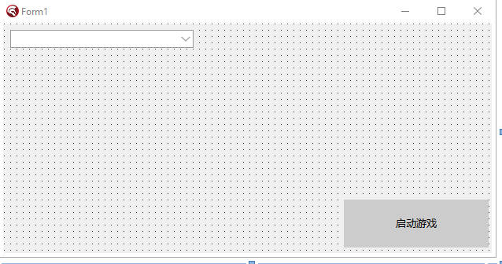
这个将作为我们程序启动时的窗口。其中，左上角我们置一个ComboBox下拉框，右下角我们置一个Button按钮。然后按钮的Caption我们定义成启动游戏字样。
然后，我们现在要做的，就是在启动器的代码部分里置几个常量，分别作为我们MC启动必须参数，参数分别如下：
const //提示，这里需要根据玩家的需要自己填入。
JavaPath = '<你的Java路径【精确到javaw】>'; //由于Delphi里面没有用\格式化输出，因此各位可以尽情的只输一个\即可，无需输入两个\来格式化
MinecraftPath = '<你的Minecraft根路径>'; //末尾不用输入\符号
MaxMemory = '<最大内存>';
UserName = '<玩家名称——离线>'; //后期会做微软登录的
VersionType = '<版本类型——启动MC后显示在左下角的类型>'; //就是这里，启动器一般会给予玩家一个自定义信息进行输入。
Wt = '<窗口宽度>'; //可选
Ht = '<窗口高度>'; //可选
这个常量代码添加的位置在单元文件开头implementation上方，var Form1的上方，type class的下方部位顶头添加即可。当然，如果你想做输入框进行输入也可以哦！
知道为什么我要写常量而不是写输入框吗？因为我为了节省本文的篇幅，这些输入路径、内存就交给玩家自己处理了。这些常量供我们后期启动游戏时使用。
然后，我们回到窗体视图，双击窗体进入FormCreate事件。我们要在主窗体显示之前将【<-MinecraftPath->\versions\】下的所有文件夹名称全部读取进列表框里。
记住，我所说的双击窗体进入的事件指的是窗体刚被创建时的事件，此时所有的控件都已经生成完毕了。大家如果用的类似Python这种非可视化GUI编程的语言，一定要记住先创建控件之后，再在窗体显示之前执行一次FormCreate窗体创建事件即可。
- ps：说实话，做这步操作只需要一点点扫描文件夹的编程知识即可完成，但我依旧还是得和大家说明一下。
然后，我们在FormCreate里面输入这一串代码，具体内容我会有注释
procedure TForm1.FormCreate(Sender: TObject);
var
Files: TArray<String>; //在方法开头建立一个数组类型的变量。
begin
var MinecraftVersionPath := MinecraftPath + '\versions'; //获取完整的MinecraftPath\versions路径
Files := TDirectory.GetDirectories(MinecraftVersionPath); //给这个数组类型的数据添加进versions下所有文件的绝对路径。
for var I in Files do //使用for-each循环，遍历数组内的内容。
ComboBox1.Items.Add(ExtractFileName(I)); //在下拉框的元素Item中依次添加进【使用ExtractFileName】后的文件名称。
end;
我们只需要将MinecraftPath填入清楚，即可。记住，在Delphi里面，使用TDirectory.GetDirectories('文件夹路径')时，给数组变量添加的是所有文件夹的绝对路径哦！
如果我们使用TDirectory.GetFiles，则是获取所有文件的绝对路径。这就是区别。
ExtractFileName的意思就是获取文件名，例如我有个文件是这样的【E:\example\exam.txt】，那么用这个函数则可以获取到【exam.txt】，类似的还有ExtractFileDir和ExtractFilePath，分别可以获取上述文件中的以下字符串【E:\example】【E:\example\】，简单来说，Dir函数最后面没有右划号，而Path函数有。具体情况的还是看你程序后期是否需要以文件路径去拼接另外一个字符串。从而得到另一个文件路径。
哦，对了，如果你们将这串代码直接复制粘贴到代码文件中，可能会发生报错。如果报错了，我们只需要在单元开头部分的uses底下，引用一个单元文件，即可使用TDirectory代码：
uses
IOUtils;
我这里简写了，当然，在你们那里，你们不可以删掉原来就有的所有引用的单元文件。只需要在逗号后面输入上面的单元文件即可导入。
然后，此时此刻，大家应该就能看到了，我们成功的导入了Minecraft所有文件夹。
各位完全可以使用适合自己的编程语言来写这一串逻辑哦。其实这一串逻辑在Delphi里面非常简单，主要是我之前也很少用C#、Java这种语言进行文件操作，基本上用的都是Delphi语言，因此，我不是很清楚各位使用别的编程语言时遇到了什么困难。大家只需要照着我代码的逻辑编写即可！
本页将教会大家如何查询并且拼接JVM和Arguments默认启动参数
首先，在Minecraft的版本中，分为这两类启动版本：
- ≤1.12.2
- ≥1.13
这两种启动版本的Json文件很不一样，同时，还有一个地方要注意：
- ≤1.12.2——LiteLoader
我将会直接将其统一放进同一个函数里，因为只需要判定某一个参数即可。所以几乎无需多余的判定。
首先我们要点进Minecraft的1.19.4的版本json文件进行查看。我们可以看到内容大致如下：
{
"arguments": {
"game": [ //有rule的参数为额外参数，直接拼接在game列表中的则是默认参数
"--username",
"${auth_player_name}",
... //其为默认游戏参数【game默认参数在开头】
{
"rules": [
{
"action": "allow",
"features": {
"is_demo_user": true
}
}
],
"value": "--demo"
},
... //其为额外游戏参数
],
"jvm": [
{ //jvm的额外参数在顶上，默认参数在下面。
/*
有部分JVM参数包含rules键值，我们在拼接启动参数的时候需要考虑这种情况：
1.rules是一个Json列表的形式
2.如果rules里面有一个值的action为disallow，则在这以下的os键值对里的name所指代的操作系统无需拼接此参数。反之亦然。
3.有些rules键值里面的value是个数组类型，我们在实际情况下也应该考虑这种情况。
*/
"rules": [
{
"action": "allow",
"os": {
"name": "osx"
}
}
],
"value": [
"-XstartOnFirstThread"
]
},
... //其为额外jvm参数，其中由os键中的osx代表的是Macos的参数，linux则是Linux的参数，windows则是Windows参数，arch: x86则代表了32位系统。
// 然后，version键值只在Windows出现，而且：【^10\】代表了其需要Windows 10版本以上才需要添加。
"-Djava.library.path=${natives_directory}",
... //其为默认jvm参数
]
},
"assetIndex": {
"id": "3",
"sha1": "0e432ccd3ef65853034193811d92ac47d0b7ca5d",
"size": 409894,
"totalSize": 555638139,
"url": "https://piston-meta.mojang.com/v1/packages/0e432ccd3ef65853034193811d92ac47d0b7ca5d/3.json"
}, //其为Minecraft所需要的资源索引json文件。
"assets": "3",
"complianceLevel": 1,
"downloads": {
"client": {
"sha1": "958928a560c9167687bea0cefeb7375da1e552a8",
"size": 23476620,
"url": "https://piston-data.mojang.com/v1/objects/958928a560c9167687bea0cefeb7375da1e552a8/client.jar"
},
... //其为Minecraft所需要的原版jar文件和原版mapping映射表下载地址。
},
"id": "1.19.4", //其为Minecraft的游戏id【一般随着Minecraft的版本命名而区分。】
"javaVersion": {
"component": "java-runtime-gamma",
"majorVersion": 17
}, //其为Minecraft所需要的Java运行时环境，component为MC官方提供的下载源中需要的环境依赖。【这个后期说道自动下载Java时会说道。】
"libraries": [
{
"downloads": {
"artifact": {
"path": "ca/weblite/java-objc-bridge/1.1/java-objc-bridge-1.1.jar",
"sha1": "1227f9e0666314f9de41477e3ec277e542ed7f7b",
"size": 1330045,
"url": "https://libraries.minecraft.net/ca/weblite/java-objc-bridge/1.1/java-objc-bridge-1.1.jar"
}
},
... //其为Minecraft所需的所有类库文件，其中包含了资源名称，downloads键下还有artifact键，里面有资源保存路径、资源sha1、资源大小、资源下载网址等。
/*
有部分类库文件包含rules键值，我们在拼接启动参数的时候需要考虑这种情况：
1.rules是一个Json列表的形式
2.如果rule里面有一个值的action为disallow，则在这以下的os键值对里的name所指代的操作系统无需拼接此参数。反之亦然。
*/
}
],
"logging": {
"client": {
"argument": "-Dlog4j.configurationFile=${path}",
"file": {
"id": "client-1.12.xml",
"sha1": "bd65e7d2e3c237be76cfbef4c2405033d7f91521",
"size": 888,
"url": "https://piston-data.mojang.com/v1/objects/bd65e7d2e3c237be76cfbef4c2405033d7f91521/client-1.12.xml"
},
"type": "log4j2-xml"
} //Minecraft Log4J配置文件路径，这个一般时用于记录玩家客户端执行的，一般我们不需要将其包含进启动参数内，因此这一整个logging键值没用。
},
"mainClass": "net.minecraft.client.main.Main", //Minecraft主类【需要添加进启动参数】
"minimumLauncherVersion": 21, //Minecraft最小启动器版本【一般指的是官启版本（猜的】
"releaseTime": "2023-03-14T12:56:18+00:00", //发布时间
"time": "2023-03-14T12:56:18+00:00", //与上面相同
"type": "release" //发布类型【如果是snapshot，就会显示snapshot，但1.19.4是release发布版。】
}
以上是我们的Minecraft原版Json文件，这个文件如何获取的晚点我会和大家娓娓道来，大家只需要先学习我们如何根据这个Json文件进行启动游戏的就好了！
在使用Delphi自带的JSON库时，大家需要在自己的头文件中引用一个单元文件。键入以下单元即可：
uses
JSON;
然后，首先我们要写一个函数，这个函数的名字就叫做：【selectParam】
我们将这个函数放进我们的自制类里面。可以选择放在private，也可以选择放在public，那我这里就选择放在public里了吧！
type
TForm1 = class(TForm)
Button1: TButton;
ComboBox1: TComboBox;
procedure FormCreate(Sender: TObject);
private
{ Private declarations }
public
{ Public declarations }
end;
Launcher = class
private
public
function SelectParam(json: TJsonObject): string;
end;
在Delphi里面，函数的意思是有返回值的方法，使用function定义，而过程是没有返回值的方法，用procedure定义。我们上面定义的是function，因此这是个函数。
然后，我们的参数列表中填入的是一个TJsonObject类型的，意味着我们这个参数是一个Json对象。我们需要将字符串转换成Json对象才能传参。
紧接着，我们就要开始实现这个函数了。我们在implementation下方依旧如同上方一样实现上述Launcher类里的SelectParam函数。请看示例
function Launcher.SelectParam(json: TJsonObject): string;
begin //开头的函数得与你在类中定义的函数一致。
result := ''; //此处设置该函数返回值默认值为空值。
var param := '-XX:+UseG1GC ' + //每一个参数末尾都需要加上空格。
'-XX:-UseAdaptiveSizePolicy ' +
'-XX:-OmitStackTraceInFastThrow ' +
'-Dfml.ignoreInvalidMinecraftCertificates=True ' +
'-Dfml.ignorePatchDiscrepancies=True ' +
'-Dlog4j2.formatMsgNoLookups=true '; //这些都是我们需要的默认JVM参数。因为PCL2添加了这些参数，仅此而已啦！
// param := param + additionJVM;
//该处，如果你想为Minecraft手动添加额外JVM参数，可以在这里写。同时参数也可以多添加一个additionJVM，类型String来添加。也可以添加全局变量。我就不添加了，我不太想。
param := param + '-XX:HeapDumpPath=MojangTricksIntelDriversForPerformance_javaw.exe_minecraft.exe.heapdump '; //由于我们这个启动器面向的是Windows，自然，对于Windows的这个额外JVM参数，我们需要将其当作默认JVM参数添加进入。
if Win32MajorVersion = 10 then param := param + '"-Dos.name=Windows 10" -Dos.version=10.0 ' ;
//该处使用了Delphi内置函数Win32MajorVersion来判断电脑的操作系统版本，如果是Windows10，则拼接下面两个参数，反之不拼接。
var judge: boolean; //在外部定义一个judge判断布尔变量
var argu: TJsonObject; //在外部定义一个argu的Json对象变量。
try
judge := false; //给外部定义的judge变量初值设为false。
argu := json.GetValue('arguments') as TJsonObject; //通过传入的Json参数获取里面的arguments键，然后将其转换成Json对象形式。传到外面。
var jvm := argu.GetValue('jvm') as TJsonArray; //再通过arguments对象进入jvm键值对里面，将其转换成Json数组。
if jvm.Count = 0 then raise Exception.Create('No jvm arguments'); //如果jvm列表内元素为空，则抛出报错，执行except语句，将judge返回true；
for var i in jvm do begin //使用循环遍历jvm参数
if i.ToString.IndexOf('rules') <> -1 then continue; //一旦遇到了rules键值，则判定此为额外JVM参数，故暂不添加进param中。
param := param + i.Value.Trim + ' '; //末尾需要加上空格。并且需要去除掉在默认参数中的空格。
end;
except
judge := true; //如果找不到arguments键，或者arguments键中的jvm值不存在，或者为空，则抛出报错。
end;
if judge then begin //如果judge为true，意味着上面jvm参数拼接失败，则执行。
param := param + ' -Djava.library.path=${natives_directory} -cp ${classpath} ';
judge := false;
end; //上述代码为Minecraft主动添加了JVM参数，此处一般是用于判断版本是否小于1.12.2。
try
param := param + '-Xmn256m -Xmx' + MaxMemory + 'm ' + json.GetValue('mainClass').Value + ' ';
//上述代码给MC启动参数总添加了几行默认游戏参数，其中包括了最小内存、最大内存、主类。且如果无法从json文件中找到mainClass键，则抛出报错。错误见下。
except
messagebox(0, '无法拼接mainClass主类参数，参数拼接失败。', '无法拼接参数', MB_ICONERROR); //此处显示一个信息框，无法拼接主类参数。
exit; //退出该函数。
end;
try //该try语句是适配1.13版本以上的版本。
var game := argu.GetValue('game') as TJsonArray; //进入了arguments后，我们再接着通过这个arguments对象进入game键值对里面，然后将其转换成Json数组形式。
if game.Count = 0 then raise Exception.Create('No game arguments');
for var i in game do begin //使用相同的手段将game参数拼接到jvm参数的后面。
if i.ToString.IndexOf('rules') <> -1 then continue;
param := param + i.Value.Trim + ' ';
//末尾需要加上空格。并且需要去除掉在默认参数中的空格。目的请看Fabric的版本Json文件。其中有一个-DFabricMcEmu键，后面跟了空格，因此这里需要对此进行空格清除。
end;
except
end;
try //在这里实则判断param中是否有minecraftArguments值，以适配1.12.2以下版本
var mcargu := json.GetValue('minecraftArguments').Value; //开始判断是否有
if mcargu = '' then raise Exception.Create('No 1.12.2 Arguments');
//如果没有这个键，或者这个键为空，则抛出报错，自动执行except语句，然后except语句内啥也没有，就接着往下执行。
param := param + mcargu; //此处如果有则拼接这个参数。
//json中的键值对'minecraftArguments'就是在1.12.2以下版本所用的启动参数。这一串代码实则判断假如MC版本小于等于1.12.2，则主动拼接这个参数。
except //此处不用设置judge了。
end;
if judge then begin //此处为当未能拼接任意默认游戏参数时抛出的报错。
messagebox(0, '无法拼接默认游戏参数，参数拼接失败。', '无法拼接参数', MB_ICONERROR); //这里置一个信息框。
exit; //退出该函数
end;
result := param; //将参数当作返回值返回。
end;
我相信，这些注释足以使玩家明白其中的道理。如果大家觉得用电子书没有换行看着太麻烦，大家可以将其复制进记事本中慢慢观看哦！
我们上述的代码中，其实已经将所有的版本都支持进去了，包括forge、Fabric、Quilt、LiteLoader等都可以正常的拼接启动参数了。包括MC的从远古版本到最新版本的启动参数支持都在这一个函数里哦！
大家只需要看个逻辑就好，完全可以翻译成自己的编程语言进行开发哦！现在大家能领略Delphi的魅力了吗？与C#、Java等语言是否觉得比较相同呢？
这一章我们要来教如何获取cp后面跟随的${classpath}值。
想必，大家在看过了启动参数后，就会发现怎么这么长？
其实，启动参数中绝大部分的篇幅都被${classpath}这个字符串模板的替换给占掉了。
让我们细看一下1.19.4的启动参数吧！【ps：下面我只列举出cp后面的东西。我自己用手格式化了一遍。】
-cp "
<MC原路径>\libraries\com\github\oshi\oshi-core\6.2.2\oshi-core-6.2.2.jar;
<MC原路径>\libraries\com\google\code\gson\gson\2.10\gson-2.10.jar;
<MC原路径>\libraries\com\google\guava\failureaccess\1.0.1\failureaccess-1.0.1.jar;
<MC原路径>\libraries\com\google\guava\guava\31.1-jre\guava-31.1-jre.jar;
<MC原路径>\libraries\com\ibm\icu\icu4j\71.1\icu4j-71.1.jar;
<MC原路径>\libraries\com\mojang\authlib\3.18.38\authlib-3.18.38.jar;
<MC原路径>\libraries\com\mojang\blocklist\1.0.10\blocklist-1.0.10.jar;
<MC原路径>\libraries\com\mojang\brigadier\1.0.18\brigadier-1.0.18.jar;
<MC原路径>\libraries\com\mojang\datafixerupper\6.0.6\datafixerupper-6.0.6.jar;
<MC原路径>\libraries\com\mojang\logging\1.1.1\logging-1.1.1.jar;
<MC原路径>\libraries\com\mojang\patchy\2.2.10\patchy-2.2.10.jar;
<MC原路径>\libraries\com\mojang\text2speech\1.13.9\text2speech-1.13.9.jar;
<MC原路径>\libraries\com\mojang\text2speech\1.13.9\text2speech-1.13.9-natives-windows.jar;
<MC原路径>\libraries\commons-codec\commons-codec\1.15\commons-codec-1.15.jar;
<MC原路径>\libraries\commons-io\commons-io\2.11.0\commons-io-2.11.0.jar;
<MC原路径>\libraries\commons-logging\commons-logging\1.2\commons-logging-1.2.jar;
<MC原路径>\libraries\io\netty\netty-buffer\4.1.82.Final\netty-buffer-4.1.82.Final.jar;
<MC原路径>\libraries\io\netty\netty-codec\4.1.82.Final\netty-codec-4.1.82.Final.jar;
<MC原路径>\libraries\io\netty\netty-common\4.1.82.Final\netty-common-4.1.82.Final.jar;
<MC原路径>\libraries\io\netty\netty-handler\4.1.82.Final\netty-handler-4.1.82.Final.jar;
<MC原路径>\libraries\io\netty\netty-resolver\4.1.82.Final\netty-resolver-4.1.82.Final.jar;
<MC原路径>\libraries\io\netty\netty-transport-classes-epoll\4.1.82.Final\netty-transport-classes-epoll-4.1.82.Final.jar;
<MC原路径>\libraries\io\netty\netty-transport-native-unix-common\4.1.82.Final\netty-transport-native-unix-common-4.1.82.Final.jar;
<MC原路径>\libraries\io\netty\netty-transport\4.1.82.Final\netty-transport-4.1.82.Final.jar;
<MC原路径>\libraries\it\unimi\dsi\fastutil\8.5.9\fastutil-8.5.9.jar;
<MC原路径>\libraries\net\java\dev\jna\jna-platform\5.12.1\jna-platform-5.12.1.jar;
<MC原路径>\libraries\net\java\dev\jna\jna\5.12.1\jna-5.12.1.jar;
<MC原路径>\libraries\net\sf\jopt-simple\jopt-simple\5.0.4\jopt-simple-5.0.4.jar;
<MC原路径>\libraries\org\apache\commons\commons-compress\1.21\commons-compress-1.21.jar;
<MC原路径>\libraries\org\apache\commons\commons-lang3\3.12.0\commons-lang3-3.12.0.jar;
<MC原路径>\libraries\org\apache\httpcomponents\httpclient\4.5.13\httpclient-4.5.13.jar;
<MC原路径>\libraries\org\apache\httpcomponents\httpcore\4.4.15\httpcore-4.4.15.jar;
<MC原路径>\libraries\org\apache\logging\log4j\log4j-api\2.19.0\log4j-api-2.19.0.jar;
<MC原路径>\libraries\org\apache\logging\log4j\log4j-core\2.19.0\log4j-core-2.19.0.jar;
<MC原路径>\libraries\org\apache\logging\log4j\log4j-slf4j2-impl\2.19.0\log4j-slf4j2-impl-2.19.0.jar;
<MC原路径>\libraries\org\joml\joml\1.10.5\joml-1.10.5.jar;
<MC原路径>\libraries\org\lwjgl\lwjgl-glfw\3.3.1\lwjgl-glfw-3.3.1.jar;
<MC原路径>\libraries\org\lwjgl\lwjgl-glfw\3.3.1\lwjgl-glfw-3.3.1-natives-windows.jar;
<MC原路径>\libraries\org\lwjgl\lwjgl-glfw\3.3.1\lwjgl-glfw-3.3.1-natives-windows-x86.jar;
<MC原路径>\libraries\org\lwjgl\lwjgl-jemalloc\3.3.1\lwjgl-jemalloc-3.3.1.jar;
<MC原路径>\libraries\org\lwjgl\lwjgl-jemalloc\3.3.1\lwjgl-jemalloc-3.3.1-natives-windows.jar;
<MC原路径>\libraries\org\lwjgl\lwjgl-jemalloc\3.3.1\lwjgl-jemalloc-3.3.1-natives-windows-x86.jar;
<MC原路径>\libraries\org\lwjgl\lwjgl-openal\3.3.1\lwjgl-openal-3.3.1.jar;
<MC原路径>\libraries\org\lwjgl\lwjgl-openal\3.3.1\lwjgl-openal-3.3.1-natives-windows.jar;
<MC原路径>\libraries\org\lwjgl\lwjgl-openal\3.3.1\lwjgl-openal-3.3.1-natives-windows-x86.jar;
<MC原路径>\libraries\org\lwjgl\lwjgl-opengl\3.3.1\lwjgl-opengl-3.3.1.jar;
<MC原路径>\libraries\org\lwjgl\lwjgl-opengl\3.3.1\lwjgl-opengl-3.3.1-natives-windows.jar;
<MC原路径>\libraries\org\lwjgl\lwjgl-opengl\3.3.1\lwjgl-opengl-3.3.1-natives-windows-x86.jar;
<MC原路径>\libraries\org\lwjgl\lwjgl-stb\3.3.1\lwjgl-stb-3.3.1.jar;
<MC原路径>\libraries\org\lwjgl\lwjgl-stb\3.3.1\lwjgl-stb-3.3.1-natives-windows.jar;
<MC原路径>\libraries\org\lwjgl\lwjgl-stb\3.3.1\lwjgl-stb-3.3.1-natives-windows-x86.jar;
<MC原路径>\libraries\org\lwjgl\lwjgl-tinyfd\3.3.1\lwjgl-tinyfd-3.3.1.jar;
<MC原路径>\libraries\org\lwjgl\lwjgl-tinyfd\3.3.1\lwjgl-tinyfd-3.3.1-natives-windows.jar;
<MC原路径>\libraries\org\lwjgl\lwjgl-tinyfd\3.3.1\lwjgl-tinyfd-3.3.1-natives-windows-x86.jar;
<MC原路径>\libraries\org\lwjgl\lwjgl\3.3.1\lwjgl-3.3.1.jar;
<MC原路径>\libraries\org\lwjgl\lwjgl\3.3.1\lwjgl-3.3.1-natives-windows.jar;
<MC原路径>\libraries\org\lwjgl\lwjgl\3.3.1\lwjgl-3.3.1-natives-windows-x86.jar;
<MC原路径>\libraries\org\slf4j\slf4j-api\2.0.1\slf4j-api-2.0.1.jar;
<MC原路径>\versions\1.19.4\1.19.4.jar //请注意，我们看到这里有一个在versions，也就是版本文件夹下面的主类jar也被包含进了cp-libraries库，在下面我会和大家具体说明这种情况的。
"
我们仔细的看看这双引号内的内容，我们会发现这其中包含了许许多多的类库。其中全部都是来自原版Json文件中的【libraries】键值下的类库。
反观libraries，这是一个列表元素，里面包含了很多对象，我们可以使用for循环遍历这个列表，然后挨个取出里面的对象，然后挨个进行分析即可了！
首先，依旧的，我们写一个函数，这个函数名字叫做：【GetCPLibraries】，放在public里面
Launcher = class
private
public
function SelectParam(json: TJsonObject): string;
function GetCPLibraries(json: TJsonObject; mcpath, slpath: string): string;
end;
让我来解释一下函数的三个参数分别代表什么意思【Delphi使用分号分隔参数而非逗号。】
| 参数 | 功能 |
|---|---|
| 参数1 | Json文件。 |
| 参数2 | mc源文件的路径。 |
| 参数3 | mc-version-具体某个版本的路径 |
然后，我们就开始写咯，依旧的，在implementation下方写上我们的实现函数。实现函数写的行数可以在上面也可以在下面，随便在哪都可以。
注意，这里的mcpath和slpath的末尾都不允许有【/】或者【\】，否则可能导致拼接失败。
function Launcher.GetCPLibraries(json: TJsonObject; mcpath, slpath: string): string;
begin
var sb := TStringBuilder.Create; //定义一个可变长度字符串
var Yuan := TStringList.Create; //定义一个原本拼接的字符串集合
var LibNo := TStringList.Create; //定义一个去除所有重复的字符串组合。
var NoRe := TStringList.Create; //定义一个去除所有版本号低的字符串集合。
var ReTemp := TStringList.Create; //定义一个去除版本号底时的临时字符串集合。
try //将libraries内的元素转成Json列表格式然后遍历。
for var i in (json.GetValue('libraries') as TJsonArray) do begin
var key := i as TJsonObject; //将每个取出的元素定义成Json对象格式。
var judge := true; //定义一个判断
try
var rl := key.GetValue('rules') as TJsonArray; //获取某一个元素的rule值。
for var J in rl do begin //下面开始判断rule值里面的action的os是否支持windows
var r1 := J as TJsonObject;
var an := r1.GetValue('action').Value; //获取action值
if an = 'allow' then begin //如果是allow，则执行
var r2 := r1.GetValue('os') as TJsonObject;
var r3 := r2.GetValue('name').Value;
if r3 <> 'windows' then begin judge := false; end; //如果支持windows，则没有continue，反之则为false
end else if an = 'disallow' then begin //如果是disallow，则执行
var r2 := r1.GetValue('os') as TJsonObject;
var r3 := r2.GetValue('name').Value;
if r3 = 'windows' then begin judge := false; end;
end;
end;
except
end;
try
var r1 := key.GetValue('natives').ToString; //判断里面是否有natives键。
judge := false; //如果有，则judge变为false，如果没有，则触发报错，并且judge保持为true。
except end;
try
var r1 := key.GetValue('downloads') as TJsonObject; //判断其downloads键中是否有classifiers键，如果有，则这个类库默认判断成natives类库。
var r2 := r1.GetValue('classifiers').ToString;
judge := false; //judge变为false表示此类库不能被添加
var r3 := r1.GetValue('artifact').ToString;//如果其downloads键中不仅有classifiers键，还有artifact键，则这个类库也可以被拼接。
judge := true; //judge重新变为true
except end;
if not judge then continue; //此时开始判断judge是否决定跳过此类。
try
Yuan.Add(key.GetValue('name').Value);
//为最后的Yuan添加Json中的name值。为什么不直接添加downloads->artifact->path呢？这个我们晚点再说。
except
messagebox(0, '你的Json中的某一个键值甚至连name键都没有，已触发报错！', 'json中不包含name键', MB_ICONERROR);
exit;//上述代码，如果Json中连name都不包含，则报错。【多半是用于处理空大括号的。】
end;
end;//给Yuan去重后装进LibNo中。【由于我懒，因此没有给原函数直接去重，不过反正最后都要free释放掉资源的，不怕内存泄漏！】
for var i in Yuan do
if LibNo.IndexOf(i) = -1 then // 去除重复
LibNo.Add(i);
for var i in LibNo do begin //在这里将去除版本号较低的类库
var KN := i.Replace('.', '').Replace(':', '').Replace('-', ''); //添加一个去除了【. : -】字符后的名称。
var KW := ExtractNumber(KN, false); //摘取字符【这里用到了一个自制函数，晚点我们再实现这个函数。】
var KM := ExtractNumber(KN, true); //摘取数字
if ReTemp.IndexOf(KW) = -1 then begin //与上面的判断重复一致，只不过这里是ReTemp和已经摘取字符后的LibNo元素。
ReTemp.Add(KW);
NoRe.Add(i); //这里需要给NoRe字符串集合直接添加原类库名称。
//下方，如果存在字符一样的类库名称，则执行。并且判断此类库名称摘取数字后与上方的摘取数字的类库名称是否比它大，如果大，则执行，反之则跳过。
end else if strtoint64(ExtractNumber(NoRe[ReTemp.IndexOf(KW)], true)) <= strtoint64(KM) then begin
NoRe.Delete(ReTemp.IndexOf(KW)); //删除旧元素
NoRe.Insert(ReTemp.IndexOf(KW), i); // 添加新元素
end;
end;
//此时此刻，这个NoRe字符串类库列表，就是我们最终获取到的需要拼接到cp参数的列表了。
//我们只需要将其添加进我们的可变字符串里就好了。
for var I in NoRe do sb.Append(Concat(mcpath, '\\libraries\\', ConvertNameToPath(I), ';')); // 这里用到了自制函数：将名称转换为路径。具体名称格式怎么转换成路径，晚点我会说的。Concat的意思是将所有参数拼接起来，与字符串的+号一致，是Delphi内置函数。
//【说一句，由于我用的是cs让我的代码有高亮显示（pascal在html没有），因此对于字符串内的右划号可能比较敏感。因此我会添加双右划号。大家在实际用Delphi写代码的时候，必须要把双右划号改成单右划号。】
//下方是拼接最后一个版本文件夹中的jar文件，这个在cp函数里经常使用得到。
sb.Append(GetRealPath(slpath, '.jar')); // 这里依旧用了一个自制函数，获取<第一个参数>路径下的第一个<文件标志=例如文件后缀名>文件。
result := sb.ToString; //将最终的资源返回。
finally
sb.Free; //在finally模块里释放资源。
Yuan.Free;
LibNo.Free;
NoRe.Free;
ReTemp.Free;
end;
end;
好了，以上便是我们如何获取类库。其中，我们在里面使用了几个函数，分别是【ConvertNameToPath、GetMCRealPath、ExtractNumbers】
getRealPath是什么意思呢？其意思就是指传入一个文件夹名称，然后通过遍历文件夹内容从而找到文件名中对于后一个参数的标志性名称【例如文件后缀】。因为我们在后期进行下载MC的时候，可能会在无法检测到jar、json的时候对此报错。而我们要支持玩家对json、jar进行改名而不用修改父文件夹名称后再修改jar、json文件夹名称。
这两个类库是什么意思呢？首先，ConvertNameToPath这个东西，我们需要看看Json文件中，对于downloads->artifact->path，然后再看看name键，它们是怎么拼接的。
为什么我们不直接读取path键呢？因为在Forge、Fabric、Quilt的libraries类库中，是没有downloads键的，只有一个name和一个url键。因此我们需要根据特定的规则来拼接这个name参数。【具体可以自己下载一个forge、fabric、quilt自己看。】
ExtractNumber其实就是填入两个参数，第一个参数填入一个原字符串，第二个参数填入一个布尔值，如果第二个参数为真，则摘取字符串中所有的数字，如果第二个参数为假，则摘取所有字符。
我们开始书写代码：
Launcher = class
private
public
function SelectParam(json: TJsonObject): string;
function GetCPLibraries(json: TJsonObject; mcpath, slpath: string): string;
function ConvertNameToPath(name: string): string;
function GetRealPath(path, suffix: string): string;
function ExtractNumber(str: string; bo: Boolean): string;
end;
上述我们在类里面又多声明了几个函数。
function Launcher.ConvertNameToPath(name: string): string;
begin
var c1 := TStringList.Create; // 给所有的变量划初始值。此均为临时变量。
var c2 := TStringList.Create;
var all := TStringList.Create;
var sb := TStringBuilder.Create;
try //以上四个字符串列表均为临时变量，大家只需要看我接下来怎么写的就好了
var n1 := name.Substring(0, name.IndexOf(':')); //切割字符串，找到第一个冒号以前的字符。
var n2 := name.Substring(name.IndexOf(':') + 1, name.Length);//切割字符串，找到第一个冒号以后的字符
ExtractStrings(['.'], [], pchar(n1), c1); //切割字符串，将前者按照.切割。这里用到了一个Delphi内置函数ExtractStrings。其函数内容专门用于切割字符串。
//第一个参数是切割的符号，第二个参数默认为空，第三个参数为需要切割的字符串的指针类型【用pchar写即可】，第四个参数则填入一个StringList字符串列表即可。
for var I in c1 do all.Add(Concat(I, '\\')); //将前者第一个冒号以前的字符，临时变量添加进all，注意这里我用了双右划号，大家如果是用Delphi写程序，记得将其改成一个即可。以下均如此。
ExtractStrings([':'], [], pchar(n2), c2); //将后者第一个冒号以后的字符按照:切割
for var I := 0 to c2.Count - 1 do begin //添加进all，这里需要判断
if c2.Count >= 3 then begin //如果冒号有3个同样的字符，则执行。此处适配了1.19-pre1以上的版本。在此版本以上，natives将直接装进cp后缀，且无需解压。
if I < c2.Count - 1 then begin //将最后一个数据脱离出all
all.Add(Concat(c2[I], '\\'));
end;
end else all.Add(Concat(c2[I], '\\')); //否则直接添加
end;
for var I := 0 to c2.Count - 1 do begin //接着再按照namt开始拼接。
if I < c2.Count - 1 then begin //无论元素是否有3个，将最后一个数据脱离出all
all.Add(Concat(c2[I], '-')); //按照-进行连接，具体请看downloads->artifact->path
end else begin
all.Add(Concat(c2[I], '.jar')); //最后一个数据末尾直接跟着jar。
end;
end;
for var I in all do sb.Append(I); //最后，将all中所有的数据添加进sb可变字符串中。
result := sb.ToString; //最后将sb返回即可。
finally
c1.Free; //最终依旧是要把这几个参数给释放掉。
c2.Free;
all.Free;
sb.Free;
end;
end;
首先，我并不知道我这样写是否是最简单的写法，但我敢肯定，这样写一定是对的。
然后是ExtractNumber：
function Launcher.ExtractNumber(str: String; bo: Boolean): String;
begin
var Temp := ''; // 设置temp
if str = '' then // 判断长度
begin
result := ''; // 如果长度等于0，则返回空
exit;
end;
for var I in str do // for循环判断长度
begin
if bo then // 如果参数bo为真，则执行，否则执行以下
begin
if I.IsNumber then // 判断是否为数字
Temp := Concat(Temp, I); // 是则添加
end
else
begin
if not I.IsNumber then // 判断是否不为数字
Temp := Concat(Temp, I); // 不是则添加
end;
end;
result := Temp;
end;
这个函数算是一个非常简单的字符串处理了，使用了I.IsNumber判断是否为数字。
好了，然后我们再看看GetRealPath的写法吧！自然，既然有获取文件的真实路径，那在将来肯定会有获取真实文件夹的路径【用于直接在版本文件夹中获取到natives文件夹。】但是现在我们还没教到这部分呢！
//此种方式适用于找寻文件。
function Launcher.GetRealPath(path, suffix: string): string;
var
Files: TArray<string>;//在方法开头定义一个string数组，用来接收
begin
//由于Json文件在版本文件夹中可能存在不止一个，并且名称都不一定。因此，我们需要额外对【.json】的suffix后缀进行单独判断。
result := ''; //将返回值定义为空
if DirectoryExists(path) then begin// 判断文件夹是否存在
Files := TDirectory.GetFiles(path); // 找到所有文件
for var I in Files do begin // 遍历文件
if I.IndexOf(suffix) <> -1 then begin // 是否符合条件
if suffix = '.json' then begin //此时开始单独为【.json】文件进行判断。。
var god := GetOutsideDocument(I); //获取Json文件的内容
//【这里用到了一个自制函数GetOutsideDocument，这个稍后会与大家说，且我们的教程中将与这个函数密不可分。】
try //这里给读取到json文件内容转换成Json对象。
var Root := TJsonObject.ParseJSONValue(god) as TJsonObject;
var tmp := Root.GetValue('libraries').ToString; //判断json中是否有libraries键值，这里直接用ToString判断。
var ttt := Root.GetValue('mainClass').Value; //判断json中是否有mainClass键值。
//如果大家发现了在原版json、Forge-json、Fabric-json、Quilt-json、LiteLoader-json中有任一同样拥有的键值，请立即向我发出issue。
result := I; //将返回值为I。
exit; //退出方法
except //如果没有libraries或者mainClass中的任意一值，则跳过。
continue;
end;
end else begin //如果找到了符合条件的，并且suffix不为【.json】，则直接返回。
//这里没有对原版的【.jar】后缀进行判断，因为如果真的要判断，需要解压jar，而这样会导致程序异常缓慢。
result := I;
exit;
end;
end;
end;
end;
end;
好了，以上就是最终的代码了。
在编写的过程中，我们意外的发现了，我们至始至终都没有编写过任何一个可以获取外部文件内容的函数。那我们应该如何编写这个函数呢？顺带一提，这个函数将伴随我们编写代码持续很久时间，因为很多地方都会需要用到它。
首先，哪里我们会用到这个函数呢？在我们读取MC的json文件进入我们的程序时，我们肯定需要用到这个函数，其次，就在上面了！GetRealPath！
这个函数非常简单，我们只需要非常简单的步骤即可编写成功！
然而，这个函数我们需要的是能够在程序的每一个地方都可以调用到这个函数。那怎么办？
我们直接在Form1窗体单元中的implementation上方写上即可。
function GetOutsideDocument(path: string): string;
implementation
众所周知学过Delphi的人都知道，在implementation上方写的所有【无论是type，还是const，还是var，又或者是function、procedure】类、量、函数等，都会在所有新建的单元中被共享，因此在很多时候我们都不建议将一些私有化的代码主动放在这里。
大家对于私有化的代码，可以在type中定义一个class，然后在class中的private代码块下面添加我们的私有化代码。这样的话我们只能在该类中适用。又或者是在implementation下方定义我们的私有函数。因为如果在下方定义私有变量、类、函数等，就只能在【当前单元文件】中被适用而无法被共享出去了。
接下来我们开始实现这个代码。首先，如果不是隶属于类的变量、函数等，前方是不需要加<类名>.的。
function GetOutsideDocument(path: string): string;
begin
result := ''; //将函数初始返回值定义为空。
var ss := TStringStream.Create('', TEncoding.UTF8, false); //定义一个字符串流。用于存储读取文件后的内容。
try
if FileExists(path) then begin //判断文件是否存在，如果存在，则执行，否则不执行。这里使用了Delphi内置函数【FileExists】，可以正常拿出使用。
ss.LoadFromFile(path); //直接读取
result := ss.DataString; //返回值设定为字符串流中的数据。
end;
finally
ss.Free; //最后释放资源。
end;
end;
好了，那么这就是我们的获取外部文件了。现在开始，在之后的教程中，如果我有需要获取外部文件的代码，我将不再多说，直接使用这个函数即可。
那么，以上便是如何获取MC的cp-libraries库，后期在我们拼接libraries库的时候，我们直接就可以填入这个函数名，然后传入三个参数即可正常获取到所有的cp键值。
我们可以很容易就看出，这个函数获取起来异常繁琐，在GetRealPath中，在实际应用中，如果你不能确定json文件到底会被玩家命名成什么，你就应该使用这个函数，否则你不应该像上面那么写。
如果你的启动器需要适配PCL2、HMCL、BakaXL的话，你应该写的是直接读取【<版本文件夹>/<版本文件夹>.json】【以及<版本文件夹>/<版本文件夹>.jar】而不是查询里面出现过的json。
但同时，如果你需要适配PCL2、HMCL、BakaXL等，你可能需要在实现【重命名此版本名称】时注意一下，将json文件名和jar文件名一同修改成你所需要的名称。
而且，我在检测版本时，将会有很大的误会产生，例如如果我的<版本文件夹>中存在两个以上的jar文件，那么我大概率会检测失败，因为无法检测里面含有jar后缀的版本文件到底是不是游戏主jar。
以上就是我在此教程中大约出现的纰漏，这些纰漏我将交给程序员们自己尝试修复了，还是依旧的，我在这份教程里只说逻辑，不做教程。
就这样啦！
本章，我们将对Forge、Fabric、Quilt特定的JSON文件进行支持。
首先，众所周知，在Forge、Fabric、Quilt【以下简称模组加载器】中，原版的下载MC时，部分启动器可能会直接将原有的Json文件给Get下来，而不是将模组加载器的Json与原版Json进行合并。
这时，我们就要好好的研究一下，对于模组加载器原版的Json文件到底是怎样的获取了。
然后，在这一章节，我们便可以了解为什么上一章中获取库文件我们不是直接获取downloads->artifact->path而是获取name了。
首先，让我们看看1.12.2Forge的部分Json文件吧！【ps：我选取的是1.12.2forge-2847的】
{
"id": "1.12.2-forge1.12.2-14.23.5.2847",
"time": "2019-09-10T01:22:54+0000",
"releaseTime": "1960-01-01T00:00:00-0700",
"type": "release",
"minecraftArguments": "--username ${auth_player_name} --version ${version_name} --gameDir ${game_directory} --assetsDir ${assets_root} --assetIndex ${assets_index_name} --uuid ${auth_uuid} --accessToken ${auth_access_token} --userType ${user_type} --tweakClass net.minecraftforge.fml.common.launcher.FMLTweaker --versionType Forge",
"mainClass": "net.minecraft.launchwrapper.Launch",
"inheritsFrom": "1.12.2",
"jar": "1.12.2",
"logging": {},
"libraries": [
{
"name": "net.minecraftforge:forge:1.12.2-14.23.5.2847",
"url": "https://maven.minecraftforge.net/"
},
{
"name": "net.minecraft:launchwrapper:1.12",
"serverreq": true
}
... //一大堆类库
]
}
首先，我们可以看到在这个Json文件上面，有几个非常关键的信息，首先就是我们的id键，这个键需要替换掉原版的id键，确信。
然后我们还可以看到里面有minecraftArguments键，如果大家看过Minecraft原版的1.12.2的Json文件的话，应该能理解这个的意思。但是在这里，这个键需要替换掉原版的键，因为这个键已经拥有了Minecraft在1.12.2里面原版的所有键值了。
然后嘛，mainClass也是需要替换掉原版的mainClass的，
最后，就是我们的libraries键了，这些键并不是替换掉原版的libraries键哦，而是附加在原版的libraries键后面。将这个类库所有的全部附加到原版的libraries键里面。
同时，这个libraries只有一个url键，甚至连downloads键都没有，因此，我们需要根据name的值来判断其文件目录。
那么，我们需要做的目的是什么呢？答案显而易见，我们通过查看PCL2下载的json文件，就可以得知：PCL2其实已经将我们的forge-2847文件附加到了原版的1.12.2里面了，也就是PCL2下载的是一个杂合体。
那我们应该怎么找到原版的1.12.2键呢？如果我们下载到了类似于这样的json而不是像PCL2那样的json，那该怎么办呢？
答案也很显而易见，我们需要找它的inheritsFrom键下面的原版json。其实嘛，假如我们只像PCL2那样，只是遍历一次父文件夹versions下面的所有文件夹名称，然后找到与inheritsFrom键值相同的，即可判断成功，那可真是太low了。
如上面所做，这样只是判断versions如果没有原版文件夹，那这个forge版本将会检测失败，从而抛出报错。提示玩家需要下载一次原版后，再尝试启动游戏。
我们需要做的，是不仅遍历一次versions下面的所有文件夹，而且需要检测里面版本json文件里的的id键值是否为forge的inheritsFrom值。这样，我们就可以做到精确的查询到获取原版的json文件进行拼接了。总而言之，我们做的工作，是要在兼容PCL2、HMCL、BakaXL的情况下，尽量做到更加精确，更加准确。
哦对了，还有一个地方需要判断，我们仔细的看看这个文件，里面似乎还有一个jar键，这个键指的是什么意思呢？看起来似乎与inheritsFrom键一样欸！
这个键的意思指的是原版的jar键，我们需要在当前json同级目录下，下载一个原版的主jar文件作为forge的加载项，同样是添加到启动参数cp的末尾versions的那个主jar文件。是的，就是这么简单！
好了，废话少说，我们开始看代码：
首先，第一步，我们需要写一个函数，函数名可以叫做【GetInheritsFrom】，用于判断json是否有指定键值，如果有，则返回父versions键，开始遍历文件夹，然后查询是否有符合条件的id。该函数接收两个参数，第一个是【path: String】，意思是传入我们存放json的那个文件夹路径。第二个是【suffix: String】，指的是我们需要判断的键，可以填入inheritsFrom，也可以填入jar。返回值是：【String】如果找到了inheritsFrom，则返回有这个键的父文件夹，就是【versions/[inherits]】这个文件夹。
由于这个函数是隶属于Launcher类下的，因此，我无需再写声明函数部分，大家在下文，假如看见了任何一个方法名前面加上了之前定义好的类名的话，那就在这个类里面写上该方法的声明即可。
function Launcher.GetInheritsFrom(path, suffix: string): string;
var
Dirs: TArray<String>; //定义一个查询versions下的所有子目录的数组
Files: TArray<String>; //定义一个随时可以删掉的上面子目录下的所有文件数组。
begin
result := ''; //返回值定义为空
if DirectoryExists(path) then begin //判断path是否存在，如果存在则执行。
var ph := GetRealPath(path, '.json'); //获取该path下的真实json路径。
if FileExists(ph) then begin //如果json的确存在，则执行。反之则不执行。
var Rt := TJsonObject.ParseJSONValue(GetOutsideDocument(ph)) as TJsonObject;
try //获取该json的内容，并转换成Json对象形式。
var ihtf := Rt.GetValue(suffix).Value; //判断里面是否有【第二个参数】键，如果有，则不抛出报错。如果没有，则抛出报错，返回值为原path。
if ihtf = '' then begin result := path; exit; end; //如果inheritsFrom键为空值，也是如此。
var vdir := ExtractFileDir(path); //获取path的父文件夹【也就是versions文件夹】
Dirs := TDirectory.GetDirectories(vdir); //获取该文件夹下的所有子目录，是的，这里是获取文件夹而非文件。
for var I in Dirs do begin //使用for循环遍历versions下的子目录
Files := TDirectory.GetFiles(I); //获取子目录中的所有文件
for var J in Files do begin //开始循环判断子目录中的所有文件
if RightStr(J, 5) = '.json' then begin //如果后缀为json
try //执行，将文件转换成json对象
var Rt2 := TJsonObject.ParseJSONValue(GetOutsideDocument(J)) as TJsonObject;
var jid := Rt2.GetValue('id').Value; //开始判断里面是否有id键
var tmp := Rt2.GetValue('libraries').ToString; //判断里面是否有libraries键
var ttt := Rt2.GetValue('mainClass').Value; //判断里面是否有mainClass键。
if jid = ihtf then begin //此时，开始判断如果id键等于inheritsFrom键值，则将该文件夹目录进行返回。否则跳过。
result := I;
exit; //记住了，这是返回文件夹的目录，而不是返回Json文件的路径
end;
continue; //如果不满足，则跳过。
except
continue; //如果不满足，则跳过。
end;
end;
end;
end;
except
result := path; //如果上述代码开头发生了报错，则返回值为原值。
end;
end;
end;
end;
然后呢，在这里我们使用了一个函数为RightStr，这个函数的意思是从右取字符串，第一个参数填入原字符串，第二个参数填入从右往左数的第几个之右的所有字符串。
这个是Delphi内置的一个函数，我们可以引用以下头文件使用它
uses
StrUtils;
我们可以看到，上面我们用了几次GetOutsideDocument，这是否说明了上一章说的函数可以被我们随时调用了呢？
然后，此时我们就应该可以通过inheritsFrom键获取原版的文件夹路径了。
然后嘛，我们还得再看一个东西，那就是在1.13版本以上的forge的json文件。为什么要看这个呢？因为forge在里面新增了许许多多的默认jvm和默认game参数，以及许多的类库。上面我们看的是1.12.2的，那么下面我们就要看的是1.19.4的forge的json文件了：
{
"_comment_": [
"Please do not automate the download and installation of Forge.",
"Our efforts are supported by ads from the download page.",
"If you MUST automate this, please consider supporting the project through https://www.patreon.com/LexManos/"
],
"id": "1.19.4-forge-45.0.43",
"time": "2023-04-07T06:24:13+00:00",
"releaseTime": "2023-04-07T06:24:13+00:00",
"type": "release",
"mainClass": "cpw.mods.bootstraplauncher.BootstrapLauncher",
"inheritsFrom": "1.19.4",
"logging": {
}, //此处为默认的JVM、game参数【由于此处没有rules规则的参数，因此此处没有额外的JVM参数，一切按照原版指示来做。】
"arguments": {
"game": [ //一大堆的有关于forge的默认game参数
"--launchTarget",
"forgeclient",
"--fml.forgeVersion",
"45.0.43",
"--fml.mcVersion",
"1.19.4",
"--fml.forgeGroup",
"net.minecraftforge",
"--fml.mcpVersion",
"20230314.122934"
],
"jvm": [ //有关于forge的一大堆jvm参数。
"-Djava.net.preferIPv6Addresses=system",
"-DignoreList=bootstraplauncher,securejarhandler,asm-commons,asm-util,asm-analysis,asm-tree,asm,JarJarFileSystems,client-extra,fmlcore,javafmllanguage,lowcodelanguage,mclanguage,forge-,${version_name}.jar",
"-DmergeModules=jna-5.10.0.jar,jna-platform-5.10.0.jar",
"-DlibraryDirectory=${library_directory}",
"-p",
"${library_directory}/cpw/mods/bootstraplauncher/1.1.2/bootstraplauncher-1.1.2.jar${classpath_separator}${library_directory}/cpw/mods/securejarhandler/2.1.6/securejarhandler-2.1.6.jar${classpath_separator}${library_directory}/org/ow2/asm/asm-commons/9.3/asm-commons-9.3.jar${classpath_separator}${library_directory}/org/ow2/asm/asm-util/9.3/asm-util-9.3.jar${classpath_separator}${library_directory}/org/ow2/asm/asm-analysis/9.3/asm-analysis-9.3.jar${classpath_separator}${library_directory}/org/ow2/asm/asm-tree/9.3/asm-tree-9.3.jar${classpath_separator}${library_directory}/org/ow2/asm/asm/9.3/asm-9.3.jar${classpath_separator}${library_directory}/net/minecraftforge/JarJarFileSystems/0.3.19/JarJarFileSystems-0.3.19.jar",
"--add-modules",
"ALL-MODULE-PATH",
"--add-opens",
"java.base/java.util.jar=cpw.mods.securejarhandler",
"--add-opens",
"java.base/java.lang.invoke=cpw.mods.securejarhandler",
"--add-exports",
"java.base/sun.security.util=cpw.mods.securejarhandler",
"--add-exports",
"jdk.naming.dns/com.sun.jndi.dns=java.naming"
]
},
"libraries": [
{
"name": "cpw.mods:securejarhandler:2.1.6",
"downloads": {
"artifact": {
"path": "cpw/mods/securejarhandler/2.1.6/securejarhandler-2.1.6.jar",
"url": "https://maven.minecraftforge.net/cpw/mods/securejarhandler/2.1.6/securejarhandler-2.1.6.jar",
"sha1": "66c15fc1f522b586476e9e4cccd0cbe192554e8a",
"size": 87783
}
}
},
... //众多类库。
]
}
好了，那么在这个json文件里面，我们唯一需要多注意一点的就是在这里面没有minecraftArguments键，取而代之的是arguments->jvm和arguments->game两个键值，因此在实际操作的时候，我们需要按照这两个逐步进行判断。
然后嘛，我们要做的第二步，就是将这个键下的原版MC的json与我们的Forge版json进行合并，记住，合并这一步是在内存当中合并，我们暂时没必要将其输出到文件中，因为我们已经拥有了该启动的所有类，这一步是为了迎合PCL2，当然，如果你想要输出到文件，那我也没辙。。
现在开始看代码吧： 该函数传入两个参数，其中yuanjson参数代表着我们有inheritsFrom的forge的json字符串形式的数据。然后gaijson指的是我们的原版json文件。返回值则返回一个拼接后的字符串【需要自己转成Json对象格式】。
function Launcher.ReplaceInheritsFrom(yuanjson, gaijson: string): string;
begin
if yuanjson = '' then begin result := ''; exit; end; //如果任意一个json为空，则返回空。
if gaijson = '' then begin result := ''; exit; end; //同上。
if yuanjson = gaijson then begin result := yuanjson; exit; end; //如果两个json一样，则返回原值。
var Rty := TJsonObject.ParseJSONValue(yuanjson) as TJsonObject; //将两个字符串转成json
var Rtg := TJsonObject.ParseJSONValue(gaijson) as TJsonObject; //同上
Rtg.RemovePair('mainClass'); //删掉原版里面的mainClass数据
Rtg.AddPair('mainClass', Rty.GetValue('mainClass').Value); //将模组加载器的json中的mainClass添加进去。
Rtg.RemovePair('id'); //删掉原版id键
Rtg.AddPair('id', Rty.GetValue('id').Value); //将模组加载器中的id键添加进去。
for var I in (Rty.GetValue('libraries') as TJsonArray) do (Rtg.GetValue ('libraries') as TJsonArray).Add(I as TJsonObject); //开始判断libraries，此时应该是增添到原版里面，而不是替换。
try //使用try语句判断gaijson里面是否有arguments->game键，如果有，则执行，反之则不执行。
for var I in ((Rty.GetValue('arguments') as TJsonObject).GetValue('game') as TJsonArray) do //开始判断
((Rtg.GetValue('arguments') as TJsonObject).GetValue('game') as TJsonArray).Add(I.GetValue<String>); //这里直接用GetValue<String>，且从长开始拼接。
except end;
try //再以同样的方式判断是否有jvm参数，如果有，则开始增添而不是替换。
for var I in ((Rty.GetValue('arguments') as TJsonObject).GetValue('jvm') as TJsonArray) do
((Rtg.GetValue('arguments') as TJsonObject).GetValue('jvm') as TJsonArray).Add(I.GetValue<String>);
except end;
try //最后一步，开始判断里面是否有minecraftArguments键，用于适配1.12.2
var ma := Rty.GetValue('minecraftArguments').Value;
Rtg.RemovePair('minecraftArguments'); //如果有，则删掉原键增添新键，反之则跳过。
Rtg.AddPair('minecraftArguments', ma);
except end;
result := Rtg.ToString; //将最后的gaijson转成的Json对象使用ToString变成字符串后直接返回。
end;
当然了，上面这一步代码，我感觉我是有点当时的年少有为，因为我直到编写这套教程的时候，我才忽然意识到，其实上面的两个参数的代码可以直接以TJsonObject类型传入，而不是用字符串形式传入，然后返回值其实也是可以用Json对象返回的，但既然写都写了，也懒得改了。
好了，那么我们写完这几个函数之后，我们就应该开始思考，我们应该怎么去使用这两个函数了，那么如何使用这两个函数呢？我们下章教程再见分晓。
在这一小部分，我们将分开叙述。
在这一章，我将分为三部分和大家说明，我将教会大家：
- 使用上几章的总和，替换掉我们拼接好的字符串模板。
- 如何启动1.12.2以下版本的Minecraft
- 如何启动远古版本的Minecraft
- 如何解压Native本地文件。
字符串模板，顾名思义就是json中双引号内的${template}。
一般情况下，美元符号右边一个大括号内的内容，如果在同一个字符串内出现多次，那多半是同一个意思。我们首先请看原版的字符串模板吧！ps：还是以原版1.19.4作为例子，下面我将介绍我已经拼接好的。
<17.0.6的Java> -XX:+UseG1GC -XX:-UseAdaptiveSizePolicy -XX:-OmitStackTraceInFastThrow -Dfml.ignoreInvalidMinecraftCertificates=True -Dfml.ignorePatchDiscrepancies=True -Dlog4j2.formatMsgNoLookups=true -XX:HeapDumpPath=MojangTricksIntelDriversForPerformance_javaw.exe_minecraft.exe.heapdump -Dos.name=Windows 10" -Dos.version=10.0 -Djava.library.path=${natives_directory} -Dminecraft.launcher.brand=${launcher_name} -Dminecraft.launcher.version=${launcher_version} -cp ${classpath} --username ${auth_player_name} --version ${version_name} --gameDir ${game_directory} --assetsDir ${assets_root} --assetIndex ${assets_index_name} --uuid ${auth_uuid} --accessToken ${auth_access_token} --clientId ${clientid} --xuid ${auth_xuid} --userType ${user_type} --versionType ${version_type}
哝，总的启动参数也就只有这么一点点，我们只是查找了其中的cp后面的classpath键值与替换了inheritsFrom键后面的东西吧！
如果大家觉得翻页太麻烦的话，可以将其复制到记事本里面，然后再观看哦！
好了，下面我们就来介绍一下如何使用上期所指认的所有方法吧！
首先，我们双击窗体按钮，进入Button1Click事件，这个事件的意思代表着按钮1的点击事件，然后我们就需要在里面写东西了
我们需要查看该版本是否是forge、fabric、quilt等模组加载器的版本，我们就需要判断其是否有inheritsFrom键。
开始写代码： 首先，在单元文件的implementation的上方，加上这样一句话：
var
Form1: TForm1;
lch: Launcher;
这样，我们就可以直接通过lch来调用Launcher中的所有内置代码了！
procedure TForm1.Button1Click(Sender: string);
begin //还是如此，我这里用双右划线代替。大家在使用Delphi实际操作时，必须用单右划线。
var spath := Concat(MinecraftPath, '\\versions\\', ComboBox1.Items[ComboBox1.ItemIndex]);
//上述代码是获取当前你从下拉框中选择的版本文件夹。众所周知，在下面的所有用到的方法中，我们都使用了lch去获取类里面的函数。
var yjson := GetOutsideDocument(lch.GetRealPath(spath, '.json')); //获取当前文件夹下的json文件内容。
var gjson := GetOutsideDocument(lch.GetRealPath(lch.GetInheritsFrom(spath, 'inheritsFrom'), '.json')); //获取是否含有inheritsFrom键文件内容。
var rjson := lch.ReplaceInheritsFrom(yjson, gjson); //当然，如果你觉得换成三行太麻烦了，你完全可以将上面两个变量直接填在这里面，但是我不太建议这么做。
//由于在前期工作我们已经做得相当完善了，因此，我们只需要用这么几个函数，即可将最正确的json文件给加载到内存之中给我们调用了。
var root := TJsonObject.ParseJSONValue(rjson) as TJsonObject; //将上述获取好的json转换成json对象形式。
var res := lch.SelectParam(root); //成功获取到拼接完成后的json文件。
//在这里，我们需要开始判断所有需要替换的字符串模板有哪些，其中包括了Vanilla、Forge、Fabric、Quilt的版本。
res := Concat(res, ' --width ', wt, ' --height ', ht); //新增最后两个参数，分别代表了长宽高。这里我一般会输入1000和800。
res := res //开始进行字符串替换。
.Replace('${auth_player_name}', UserName) //这里开始判断的是玩家名称【由于目前我们做的只有离线登录，正版登录的玩家名称后期再说了。】
.Replace('${version_name}', root.GetValue('id').Value) //这里开始判断的事玩家版本【其实随便填什么都可以啦！但是这里以json中的id值作为判断依据。】
.Replace('${game_directory}', Concat('"', MinecraftPath, '"')) //重点！敲黑板！此处应该填入的是一个路径，用于判断版本隔离的，
//大家可能会发现，BakaXL的该键值，总是指向<source>\versions\<versionname>下的目录。而PCL2，则会让各位选择版本隔离。【这点我们以后说，大家只需要做个了解即可。】
.Replace('${assets_root}', Concat('"', MinecraftPath, '\\assets', '"')) //assets_root一般指的是MC启动所需要的assets路径。这里依旧使用了两个右划号。
.Replace('${assets_index_name}', Root.GetValue('assets').Value) //其实，这里可以使用assetIndex->id代替的，也可以直接用assets。这个键值是原版就有的。然后assetIndex这个键后期我们说道下载的时候再介绍。
.Replace('${auth_uuid}', '0123456789abcdef0123456789abcdef') //这里需要填入一个无符号的32位uuid键作为玩家的唯一标识符。大家可以用Delphi内置函数随机生成一个UUID，但是这里建议每次进入游戏的UUID键值必须一致，否则可能会导致物品栏内的物品失踪的bug。
.Replace('${auth_access_token}', 'none') //这里填入你的access_token，想必大家应该看到过MCBBS的那个帖子了吧，这个作为玩家的正版登录令牌，在离线模式下无需此键【填入任何字符即可】，但是在正版登录中，你绝对不允许将带有access_token的启动参数发给对方。
.Replace('${user_type}', 'Legacy') //用户类型，一般如果是正版登录，则替换为Mojang、外置同理，如果是离线登录，则替换为Legacy。
.Replace('${version_type}', VersionType) //填入版本类型，一般是显示在游戏启动后的左下角以及游戏内按下F3后左上角显示的。
.Replace('${natives_directory}', Concat('"', lch.GetRealDirectory(spath, 'natives'), '"')) //这个路径填入Minecraft本地库路径，不过照常来说，官启的本地库路径一般在<C:\Users\<用户名>\AppData\Local\Temp>中，
//而HMCL、PCL、BakaXL所存放的本地库路径，则在<MC路径>\versions\<versionName>中。因此，我们需要适配这种情况。这里使用了一个自定义函数GetRealDirectory，我们稍后说。
.Replace('${launcher_name}', 'CourseLauncher') //定义你的启动器名称【暂不知其用途】
.Replace('${launcher_version}', '1.0') //定义你的启动器版本【暂不知其用途】
.Replace('${classpath}', Concat('"', lch.GetCPLibraries(root, MinecraftPath, spath), '"')) //使用GetCPLibraries键替换掉classpath键。
.Replace('${library_directory}', Concat('"', MinecraftPath, '\libraries', '"')) //这里可以直接填入libraries的路径。
.Replace('${classpath_separator}', ';'); //这里是每个classpath的分开符号。
//替换到这种程度就可以了。
end;
最后，我们在上面写了一个GetRealDirectory的函数，这个函数我们也要去实现一下哦！
function Launcher.GetRealDirectory(path, suffix: string): String;
var // 同上
Dirs: TArray<String>;
begin
result := '';
if DirectoryExists(path) then // 判断文件夹是否存在
begin
Dirs := TDirectory.GetDirectories(path); // 获取文件
for var I in Dirs do begin // 循环判断
if I.IndexOf(suffix) <> -1 then begin// 判断是否在里面
result := I;
exit;
end;
end;
end;
end;
然后，我们就敲完所有的代码了！
我们可以在最后一个Replace的后面，建立一个messagebox用来查看我们的参数是否拼接正确哦，记住，我们所有的参数都只能在一行中实现，不允许出现分段或者多行哦！
我们在最后一步，在Replace完了之后，我们只需要再添加一个函数，用于启动我们的MC即可！
ShellExecute(Application.Handle, 'open', pchar(JavaPath), pchar(res), nil, SW_SHOWNORMAL);
//记住，这里的中间两个参数为pchar类型，意味着这是一个char指针类型。
只需要简简单单的一行，我们即可通过我们定义的Java启动MC了！这是一个Delphi的内置函数，用于执行cmd命令时用的。在这里面，我们也是首次使用到了我们的JavaPath哦！在使用这个函数的时候，我们需要引用一个单元文件：
uses
ShellAPI;
关于这个函数的使用教程，请参见：网址
具体功能见下：
| 参数 | 功能 |
|---|---|
| 1 | 默认均为Application.Handle |
| 2 | 执行外部程序时填入open，打开网址时填入nil |
| 3 | 外部程序入口，如果是网址则填入网址 |
| 4 | 程序参数，如果没有可以填nil |
| 5 | 默认文件夹，直接填nil |
| 6 | 显示方式，这里只需了解两个，1.SW_SHOWNORMAL，正常显示，2.SW_HIDE，隐藏窗口显示。 |
好了，接下来，我们便可以正常的启动我们的MC了！你应该能看到，【假设你的MC已经被别的启动器下载并且被启动过至少一次。】【同样的，不仅如此，我们甚至还早已可以启动1.12.2以下以及远古版本了！】
我们造的轮子可真多，难道不是么？
哦，对了，此时此刻，你需要对你的MC版本进行Java版本判断，例如1.12.2的Forge只能使用java8启动、1.17以上版本只能使用Java17启动等。
本章教会大家如何解压Natives文件
ps：本章仅仅适用于1.19-pre1版本及以下。
首先哈，在部分的版本json文件中，我们总能看到有这么一种影子：libraries->downloads->classifiers键，这个键所指的是什么意思呢？其实，这个关系到一个很重要的概念：Natives本地库的解压。
在上一期，我已经说过了，需要大家在别的启动器中不仅下载过一次游戏，而且需要启动过一次后，才可以正常在本启动器中启动。
那么这到底是为什么呢？本章就要来为大家探讨这个问题。
首先，我们众所周知，MC在启动的时候，会在versions/
然后嘛，用过官启的小伙伴们，肯定都应该知道，官启是将Natives本地库解压到【C:\Users<用户名>\AppData\Local\Temp】路径下的，也就意味着电脑重启一次，该本地库将会被自动删除。
但我们这么想，几乎所有的第三方启动器，都是将Natives本地库解压到【versions<versionName><版本名>-natives】库下。
而我们的启动器已经设置过了，自动检测versionname下面出现的第一个有natives关键字的程序。因此，直接解压就好了捏！
请看代码：【依旧存放在Launcher类下，由UnzipNative方法名断定。】
function Launcher.UnzipNatives(json: TJsonObject; path, relpath: String): Boolean;
begin //其实，乍一看这个方法，居然与前面的GetCPLibraries函数近乎一致，甚至连参数都是一样的。只是这个返回值变成了Boolean值罢了。
result := false; //初始返回值为false
var sb := TStringBuilder.Create; //定义好几个初始变量，与GetCPLibraries一致。
var Yuan := TStringList.Create;
var LibNo := TStringList.Create;
var NoRe := TStringList.Create;
var ReTemp := TStringList.Create;
var vername := ExtractFileName(relpath); //获取版本文件夹下的版本名字。
if path.LastIndexOf('\\') <> path.Length - 1 then path := Concat(path, '\\');
try //解析Json
var Jr := json.GetValue('libraries') as TJsonArray; //获取libraries中的内容
for var I in Jr do //添加元素，并将name转换成path加入进yuan数组
begin
try //找不同游戏，本次找不同你的对手是：Mojang！【又来一次找不同啊！】
var Jr1 := I as TJsonObject;
var pdd := true;
try
var rl := Jr1.GetValue('rules') as TJsonArray; //获取某一个元素的rulWe值。
for var J in rl do begin //下面开始判断rule值里面的action的os是否支持windows
var r1 := J as TJsonObject;
var an := r1.GetValue('action').Value;
if an = 'allow' then begin
var r2 := r1.GetValue('os') as TJsonObject;
var r3 := r2.GetValue('name').Value;
if r3 <> 'windows' then begin pdd := false; end; //如果支持windows，则pdd为true，反之则为false
end else if an = 'disallow' then begin
var r2 := r1.GetValue('os') as TJsonObject;
var r3 := r2.GetValue('name').Value;
if r3 = 'windows' then begin pdd := false; end;
end;
end;
except end;
var arch := IfThen(IsX64, '64', '32'); //直接开始查询natives，如果有x64之类的替换，则替换即可。这里是用于适配1.7.10中的json文件。
var Jr2 := Jr1.GetValue('name').Value; //查询name值。
var Jr3 := Jr1.GetValue('natives') as TJsonObject; //查询natives值。
var Jr4 := Jr3.GetValue('windows').Value.Replace('${arch}', arch); //如果遇到了有arch需要替换的键，则替换即可。
if pdd then Yuan.Add(Concat(Jr2, ':', Jr4)); //直接开始加入Yuan列表中。
except
continue; //如果出现了报错，则跳过。
end;
end;//去除重复
for var N in Yuan do
if LibNo.IndexOf(N) = -1 then // 去除重复
LibNo.Add(N);
for var G in libNo do begin //去除版本较低的那个，以下为去除不必要的重复
var KN := G.Replace('.', '').Replace(':', '').Replace('-', '').Replace('/', '');
var KW := ExtractNumber(KN, false); //摘取字符
var KM := ExtractNumber(KN, true).Substring(0, 9); //摘取数字
strtoint(KM);
if ReTemp.IndexOf(KW) = -1 then begin //判断是否
ReTemp.Add(KW);
NoRe.Add(G);
end else if strtoint(ExtractNumber(NoRe[ReTemp.IndexOf(KW)], true).Substring(0, 9)) <= strtoint(KM) then begin
NoRe.Delete(ReTemp.IndexOf(KW));
NoRe.Insert(ReTemp.IndexOf(KW), G); // 添加新元素
end;
end;
if not DirectoryExists(getMCRealDir(relpath, 'natives')) then //如果不存在natives文件夹的话，以下用了双右划号的同上几章一样处理。
begin //此处才开始认真起来，前面大部分都是仿照GetCPLibraries的。
ForceDirectories(Concat(relpath, '\\', vername, '-natives')); //创建一个新的文件夹。
if NoRe.Count = 0 then //如果查询出的文件为0，则创建一个新文件且不解压。
begin //直接返回true，并退出该函数。
result := true;
exit;
end;
for var C in Nore do //如果不为空，则开始循环判断并且解压，如果解压不成功，则返回空。
begin
if not UnzipMethod(Concat(path, 'libraries\\', ConvertNameToPath(C).Replace('/', '\\')), Concat(relpath, '\\', vername, '-natives')) then begin
continue;
end;
end; //如果以上不仅检测出来，还解压全部成功，则判断version文件夹中是否有natives文件，如果有，则删除除了dll文件以外的所有文件。
DeleteRetain(getMCRealDir(relpath, 'natives'), '.dll');
if not DirectoryExists(getMCRealDir(relpath, 'natives')) then begin
ForceDirectories(Concat(relpath, '\\', vername, '-LLL-natives'));
result := true;
abort;
end;//如果任何一项不完成，则返回值设为false。
end;
result := true;
finally
sb.Free; //给所有free掉
Yuan.Free;
libNo.Free;
NoRe.Free;
ReTemp.Free;
end;
end;
好了，以上就是解压Natives了！自己一看，还真的与GetCPLibraries差不多一致呢！ 这个函数是在Launcher类下的，因为我们只需要用其解压Natives参数，别的时候都用不着。
上面我们使用了一个三元运算符的Delphi内置函数，叫做IfThen，这个函数可以引用下列单元文件可以使用：
uses
StrUtils;
然后，还有，此处我们需要判断如果使用的Windows电脑到底是32位的，还是64位的。我们需要做的是新建一个IsX64函数。 函数如下：
function isX64: Boolean;
var
si: SYSTEM_INFO;
begin //将上方变量获取系统本地信息。
GetNativeSystemInfo(&si); // = 9 表示的是 AMD64
if(si.wProcessorArchitecture = PROCESSOR_ARCHITECTURE_AMD64 {9}) or
(si.wProcessorArchitecture = PROCESSOR_ARCHITECTURE_IA64) then //如果是AMD64或者是IA64，则返回True，否则返回false。
Result := True
else
Result := False;
end;
然后捏，这个函数我们由于与GetOutsideDocument差不多一致，因此，我们需要在implementation上方写上这串代码的声明哦！我们就无需在Launcher类里面声明了。
再者，我们还需要写两个函数，第一个函数是：UnzipMethod，这个函数用于传入两个参数，第一个是需要解压的zip或者别的后缀的文件，第二个参数是解压的路径【第一个参数是具体的文件，第二个参数是一个文件夹路径】
实现如下：
function UnzipMethod(zippath, forderpath: String): Boolean;
begin
result := false;
if DirectoryExists(forderpath) then ForceDirectories(forderpath);
if not FileExists(zippath) then exit;
var zp := TZipFile.Create;
try
zp.Open(zippath, zmRead); //打开压缩包
zp.ExtractAll(forderpath); //解压压缩包
result := true;
finally
zp.Free;
end;
end;
在使用这个函数解压的时候，我们需要引用一个单元文件：
uses
Zip;
这个函数写好之后，下一个函数就是DeleteRetain函数，这个函数也是填入两个参数【说实话，这个函数其实没有必要的，但是又其实有点小必要吧。】【第一个参数：要删掉的总文件夹路径，第二个参数：要保留的文件后缀。】
其实，说实话，这个函数很危险，稍有不慎【例如删掉的总文件夹路径填为空】，可能会引发格式化磁盘的风险。
但我还是得和玩家说说啦：
function DeleteRetain(N, suffix: String): Boolean;
var
F: TSearchRec;
begin
result := false;
if N = '' then exit;
if (suffix = '') or (suffix = '.') then exit;
if N.IndexOf('\\') = -1 then exit;
if FindFirst(Concat(N, '\*.*'), faAnyFile, F) = 0 then begin //查找文件并赋值
try
repeat //此处调用了API函数。
var S: String := F.Name;
if (F.Attr and faDirectory) > 0 then //查找是否为文件夹，如果是则执行
begin
if (S <> '.') and (S <> '..') then //删除首次寻找文件时出现的【.】和【..】字符。
DeleteRetain(Concat(N, '\\', S), suffix) //重复调用本函数，并且加上文件名。
end
else
if S.Substring(S.LastIndexOf('.', S.Length)) <> suffix then DeleteFile(N + '\\' + F.Name); //如果没发现后缀为suffix的话，则执行。
until FindNext(F) <> 0; //查询下一个。
finally
FindClose(F); //关闭文件查询。
end;
RemoveDir(N);
result := true;
end;
end;
这个函数，我们就不写在Launcher类下了，与上面两个函数一致，我们在将来程序运用中将经常运用到这个函数。我们只需要在implementation上写这个就好了。
好了，在敲完上述代码之后，我们只需要应用就好了！，我们只需要在Button1Click执行一次这个即可啦！
请看代码：
var res := lch.SelectParam(root); //成功获取到拼接完成后的json文件。
//在这两行代码的中间，新建一个这样的代码块
if not UnzipNatives(root, MinecraftPath, spath) then begin
messagebox(Handle, '解压Natives文件失败，请从别的启动器启动一次，再尝试启动吧！', '解压Natives失败', MB_ICONERROR);
exit;
end;
res := Concat(res, ' --width ', wt, ' --height ', ht); //新增最后两个参数，分别代表了长宽高。这里我一般会输入1000和800。
好了，非常简单的代码实现，就写完了！现在，大家终于可以在别的启动器直接下载好，然后直接在本启动器就可以直接启动了！大家可以先行一步，去versions\versionName\目录下，删掉含有natives的任何子目录，然后再尝试启动游戏哦！
这里墙裂建议使用1.12.2或者1.16.5进行测试，当然你用别的MC版本启动也是可以哒！
本章目的
- 教会大家如何使用离线登录并将账号信息保存到外部文件
- 教会大家如何使用微软登录
- 教会大家如何使用微软的OAuth登录
- 教会大家如何使用Authlib-Injector第三方登录
- 教会大家如何根据Refresh-Token重置账号。
本章教会大家如何将账号信息保存到外部文件
注意：本章可能会稍微有点长，因为干货比较多，我们需要搭建一个账号部分的框架。
在后期，微软登录和外置登录之时，会因为这一期而大大减少了篇幅量。
其实，在之前的教程中，我们做的就是支持离线登录，并且当时，我们使用的UUID为【0123456789abcdef0123456798abcdef】这么个32位无符号小写uuid，但是，众所周知，肯定不止这么一种uuid的拼法。
据统计，这么一个32位uuid的拼法，在uuid诞生那一年，其制作者就说过：UUID是一种极为安全的玩家身份验证渠道，以我们现在的时间来说，就算每一纳秒生成一个UUID，也需要将近一百亿年之后，UUID才会被用完。
这种身份验证甚至被用在了二维码上，因此，我们根本无需担心世界上的二维码或者是UUID会被用完。也更不用杞人忧天的想到自己的UUID可能会被别人给盗用。
好吧，我们开始写代码吧：
首先，右键IDE右侧栏上的exe，然后点击Add New，然后新建一个VCL窗体。
窗体样式大概是这样的：
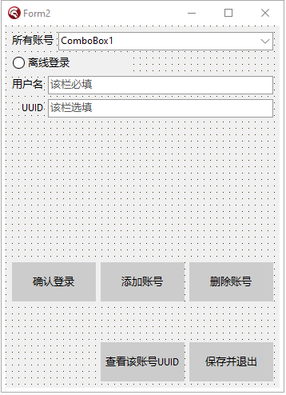
然后，我们点击Ctrl+S键保存这个窗体，然后给该窗体文件命名为【AccountForm.pas】即可。
然后，我们再在主窗口上，建立一个这样的按钮：
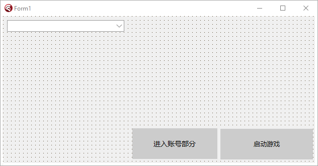
双击这个按钮，进入代码编辑视图，我们首先第一步，需要滑到最顶端，引用一个单元文件，单元文件名自然就是我们的窗体文件啦！
在以后每次大家新建窗体时，如果需要在别的窗体中打开另一个窗体，就必须要在这个窗体里面引用那个窗体的头文件：
uses
AccountForm;
使用完毕之后，我们就可以回到按钮点击事件，在里面写上这么一段话
procedure TForm1.Button2Click(Sender: TObject);
begin
Form2.ShowModal; //Form2指的是账号窗体属性中的name值，多半是唯一的。
end;
是的，只需要Show一次，就可以了！此时，你可能会问：为什么不用像C#那样new一次【指调用一次Create方法】后，才能显示呢？
其实，Delphi已经帮我们做好工作了！右键右侧文件树状图上面的exe，然后点击View Source，你就能看见，Delphi在单元执行主线程中，已经为我们使用CreateForm创建过一个窗体了！我们只需要使用其内部的Show方法即可！
然后嘛，让我来解释一下Show和ShowMadel方法的区别，首先，Show是指使用一个额外线程启动这个窗口，意思就是不锁定住主窗口启动。ShowModal的意思是锁定住主窗口，利用主线程直接开始执行窗体代码的意思。该种方式与C#中的ShowDialog一致。
然后，我们就要正式的在AccountForm里面敲代码了！
首先，我们需要敲出离线登录的代码。按照我们上述的布局，我们点击【添加账号】的按钮，进入按钮点击事件。
让我们首先介绍一下这个按钮的主要功能吧！这个按钮的主要功能就是将账号的名称添加进上方的所有账号的下拉框里面。该按钮同样适配于微软登录、外置登录。同样的，我们需要置一个单选框，用于给玩家选择应该使用哪种登录方式。
进入点击事件，我们开始写代码咯！【ps：这里的添加按钮名称为Button2】，其余的按钮我会在之后挨个和大家说的。
procedure TForm2.Button2Click(Sender: TObject);
var
uid: TGuid; //在函数开头声明一个uid。
begin
if RadioButton1.Checked then begin //该处直接判断离线登录的单选框是否选上。
if (Edit1.Text = '') or (not TRegex.IsMatch(Edit1.Text, '^[A-Z0-9a-z]')) or (Length(Edit1.Text) > 16) or (Length(Edit1.Text) < 3) then // 如果玩家名称为空
begin //对玩家名称进行判断。
messageBox(Handle, '你的离线登录名称并不理想，输入错误！请不要输入中文，也不要超过16个字符！不要为空。', '错误警告', MB_ICONERROR);
exit;
end;
var tuid: String := Edit2.Text; //获取UUID编辑框的内容。
tuid := tuid.ToLower; //对其进行小写。【如果有的话】
if (tuid = '') then begin //判断其是否为空（为空则随机生成一个UUID）
CreateGuid(uid); //如果为空，则为uid变量初始化
tuid := GuidToString(uid).Replace('{', '').Replace('}', '').Replace('-', '').ToLower; //对tuid赋值，将Guid变成String后赋值上去。
end;
if not TRegex.IsMatch(tuid, '^[a-f0-9]{32}') then begin //用正则表达式判断tuid是否符合32位无符号UUID
messageBox(Handle, '你的离线登录UUID输入错误，请输入一串长32位无符号UUID。或者不输入等待随机生成', '错误警告', MB_ICONERROR); //如果不是，则退出方法。
exit;
end;
//将所有目标添加到配置文件，写入Json
(AccountJson.GetValue('account') as TJsonArray).Add(TJsonObject.Create
.AddPair('type', 'offline')
.AddPair('name', Edit1.Text)
.AddPair('uuid', tuid)
); //如果仔细看这一行，我们就会发现，我们将配置文件是写在这里的：
(*
Delphi里面使用这种符号来进行多行注释。
{
"account": [
{
"type": "offline",
"name": "<玩家名称>"
"uuid": "<玩家UUID>"
}
]
}
*)
//我们发现，这个Json不是一个列表形式，而是在一个对象中建立了一个名为account为键名的列表，然后在列表中新键type和name啥啥的。
//这个键我们稍后再说，稍后我会对其进行讲解。
ComboBox1.ItemIndex := ComboBox1.Items.Add(Concat(Edit1.Text, '（离线）')); //给下拉框添加元素，顺便赋值给最终值。
Edit1.Text := '';//给Edit设置为空
Edit2.Text := '';
messagebox(Handle, '添加成功！', '添加成功', MB_OK+MB_ICONINFORMATION);
end; //后期微软登录之时，我们只需要把这个分号去掉，然后在下面写上 else if RadioButton2.Checked then 即可。
end;
在上述代码中，我们用了一个正则表达式来匹配UUID是否真的为32位无符号UUID。
该正则表达式需要引用Delphi的一个单元：【本次使用别的Form，在你不确定自己需要引用哪些单元文件的时候，你需要将MainForm里的单元文件全部引用到该Form里面。】
uses
RegularExpressions;
然后呢，还有一件事，下面有个AccountJson，这个是从哪里来的呢？哦！我们在implementation的下方，建立一个AccountJson，这个Json文件作为我们的账号配置Json。
我们需要在其中新建一个变量，见下
implementation
var
AccountJson: TJsonObject;
但此时，我们还不能直接使用它，因为它只是一个没有初始化过的变量。我们需要做的，就是在FormCreate中为这个变量new一次。
回到窗体视图，双击窗体，我们便可以打开FormCreate事件。
在里面这么写即可：
procedure TForm2.FormCreate(Sender: TObject);
begin
AccountJson := TJsonObject.Create;
end;
写下这么一段话即可对AccountJson进行初始化操作。之后我们便可以对AccountJson进行自由加键删键处理。
如果你发现上述代码报错，那绝大概率是你的JSON单元没有引用，你需要去看上面的介绍。
然后，我们就需要去对这个Json文件进行处理。在上面，我们为其添加了新键。
接着，我们便可以回到主界面，双击保存并退出按钮，然后进入事件【我的按钮name是Button4】开始写下保存账号信息的代码：
procedure TForm2.Button4Click(Sender: TObject);
begin
SaveFileToOutside(Concat(ExtractFilePath(Application.ExeName), 'launcher\AccountJson.json'), AccountJson.Format);
Close; //这里使用了Format函数，此为将Json字符串进行格式化后保存到外部文件。我们还使用了Application.ExeName，这个意思指的是获取exe当前目录。
end;
将上述文件保存出去即可。其中，我们使用了一个新的函数，名为SaveFileToOutside，这个函数是一个自制函数，用途是将内容字符串保存到外部文件。现在，我们回到MainForm中，书写这个函数吧！
procedure SaveFileToOutside(path, content: string);
begin
var ss := TStringStream.Create('', TEncoding.UTF8, False);//定义一个流
if not DirectoryExists(ExtractFilePath(path)) then ForceDirectories(ExtractFilePath(path));//判断文件夹是否存在，如果不存在则强制生成一个文件夹。
try
ss.WriteString(content); //写入字符串进流
ss.SaveToFile(path); //将流保存到外部文件。
finally
ss.Free;
end;
end;
然后，还是在implementation下面写上这个函数。
此时，大家可能会发现在AccountForm中，还是无法引用这个函数啊？那是因为我们还没有引用这个MainForm文件呢！
让我们在implementation下方写上这串代码：
implementation
uses
MainForm;
即可使用了！
然后，我们双击FormCreate，我们需要在该窗口刚刚创建之时，就立刻对Account支持，我们需要判断其文件是否存在，如果存在，则加载Json，如果不存在，则抛出报错，初始化Json
procedure TForm2.FormCreate(Sender: TObject);
begin
AccountJson := TJsonObject.Create;
if not FileExists(Concat(ExtractFilePath(Application.ExeName), 'launcher\AccountJson.json')) then begin //给Json变量初值附上一个account的JsonArray
AccountJson.AddPair('account', TJsonArray.Create); //是的，直接在这里初始化account键。
var j := AccountJson.Format; //将Json格式化并导出
SaveFileToOutside(Concat(ExtractFilePath(Application.ExeName), 'launcher\AccountJson.json'), j); //保存至外部文件。
end else begin //如果有则执行
var j := GetOutsideDocument(Concat(ExtractFilePath(Application.ExeName), 'launcher\AccountJson.json')); //获取外部文件的AccountJson内容，再将其转换成Json对象。
AccountJson := TJsonObject.ParseJSONValue(j) as TJsonObject; //给Account附上初值。
end;
try //以下代码是：为下拉框添加进元素。
for var I in (AccountJson.GetValue('account') as TJsonArray) do //遍历Json数组
begin //如果找到的type为offline，那么添加为离线登录，如果检测到microsoft，那么添加为微软正版登录。
var tpe := I.GetValue<String>('type'); //获取type值
if tpe = 'offline' then ComboBox1.Items.Add(I.GetValue<String>('name')) //如果是离线，则在下拉框中添加。后期可以直接在下面输入else microsoft的！
end;
except
tp := -1;
ComboBox1.ItemIndex := -1;
end;
end;
这样，我们就已经做好了在程序一旦启动之时，立刻就给我们的程序初始化所有的账号信息了。
然后，下一步，我们需要制作确认登录的功能，这个功能很简单，请看代码：功能晚点会说【我的确认登录按钮是Button1】，在窗体视图双击按钮进入代码编辑：
procedure TForm2.Button1Click(Sender: TObject);
begin
var pln := ((AccountJson.Values['account'] as TJsonArray)[ComboBox1.ItemIndex] as TJsonObject).GetValue('name').Value; //通过ComboBox1的ItemIndex属性，成功获取到目前登录的账号玩家名称。
tp := ComboBox1.ItemIndex; //tp是一个全局变量，专门获取玩家名称。
messagebox(Handle, '确认成功！', '确认成功', MB_OK); //弹出一个信息框说明确认成功
end;
其中，有一个名为tp的变量，它其实是一个全局变量，用于存储玩家当前选择了第几号账号。例如我选择的是1号，那么这个变量将存储0，如果没有确认账号，则这个变量将存储-1。
然后，我们需要在全局变量中定义一个这种变量【由于这个数字，我们并没有将其保存到外部文件，大家也当然可以将其保存到外部，这样可以在打开启动器的同时，自动装载玩家选择的账号，同时在账号部分窗口创建的时候，也同样将下拉框的ItemIndex属性，赋值位于这个变量的外部值哦！】
AccountForm.pas
var
Form2: TForm2;
tp: Integer = -1; //定义一个初值。
implementation
【这里由于篇幅原因，就不实现上述保存到外部了。（视频教程里也照样没有保存。）】
然后然后，我们回到MainForm中，我们需要改改启动游戏的逻辑咯！
首先，去除全局常量UserName，然后在Button1Click中这样写
procedure TForm1.Button1Click(Sender: TJsonObject);
var
PlayerName: String;
PlayerUUID: String;
PlayerType: String;
PlayerAcTo: String;
begin
... //前面省略
var res := lch.SelectParam(root); //成功获取到拼接完成后的json文件。
try
var JsonAbout := TJsonObject.ParseJSONValue(GetOutsideDocument(Concat(ExtractFilePath(Application.ExeName), 'launcher\AccountJson.json'))) as TJsonObject; //获取外部json文件
var chooseAbout := (JsonAbout.GetValue('account') as TJsonArray)[tp] as TJsonObject; //获取当前选择的代码块
var typetemp := chooseAbout.GetValue('type').Value; //获取选择的type键
if typetemp = 'offline' then begin //如果type键等于offline，则执行。
PlayerName := chooseAbout.GetValue('name').Value; //设置为name
PlayerUUID := chooseAbout.GetValue('uuid').Value; //设置为uuid
PlayerAcTo := PlayerUUID; //accessToken等于uuid
PlayerType := 'Legacy'; //type为Legacy。
end; //后期直接在这里接上microsoft等就可以了！
except
messagebox(Handle, '你还暂未选择一个账号，请去选择一次吧！', '暂未选择', MB_ICONERROR);
exit;
end;
//在这两行代码的中间，新建一个这样的代码块
if not lch.UnzipNatives(root, MinecraftPath, spath) then begin
... //后面省略
.Replace('${auth_player_name}', PlayerName)
.Replace('${auth_uuid}', PlayerUUID)
.Replace('${auth_access_token}', PlayerActo)
.Replace('${user_type}', PlayerType)
当我们写好上述代码，并且改好之后，我们就可以正常的打开启动器了，然后尝试一下，进行一次离线登录MC吧！
好了好了，既然如此，你已经可以正常的启动Minecraft并应用离线登录了，但是文章当中还有很多问题没有体现出来，这些问题的修复就留给大家当作作业啦！大家可以自行去修复这些问题哦！
但是，切记一点，由于我的AccountJson是保存在exe目录下，因此这种情况有很高的风险性会被人家盗取AccessToken，因此，我们也必须将AccountJson保存到一个安全的地方。【例如AppData\Roaming】目录下，或者Local目录下。
好了，话就说这么多，尽情期待下一章吧！
本章教大家如何使用微软登录
切记，本章使用的是浏览器回显登录，如果你的启动器不愿意支持这个，请转到下一章OAuth登录。
首先哈，正如文章标题，本章使用的是浏览器回显登录。那么什么是浏览器回显呢？
首先，让我们看看Minecraft官方Wiki上是怎么说的吧：点我
首先，Minecraft的客户端ID被硬编码为00000000402b5328，这是众所周知的。我们可以在浏览器中访问下面那一串HTTP。紧接着，也许会弹出一个让你登录Minecraft的登录窗口，也许不会弹。
那么，有些时候会弹出一个登录窗口是怎么回事呢？此时可能是因为你使用的Windows浏览器不是Edge，并且从未登录过任一微软账号的原因。如果没有弹出登录窗口，而是直接改变了网址栏，变成了【https://login.live.com/oauth20_desktop.srf?code=<登录代码> 】类似于这样的网址。那多半是你的浏览器已经保存了你有关Minecraft微软登录的Cookie，请删掉该浏览器中的所有Cookie后再使用。
好了，然后我再来给大家介绍一下在程序中使用WebBrowsers进行登录而不是使用外置浏览器进行登录的方式：其实此时与外置浏览器登录没有任何区别，只是我们使用的是IE内核的浏览器，与Chromium内核的浏览器的Cookie保存位置不一样，因此即使我们在程序中删掉有关登录信息的任何Cookie也不会有任何问题。
我们所需要实现的目的是：在程序中或者在外置浏览器中，登录网址后对其返回的所有Json进行解析，最终得到Minecraft的登录令牌。
这里切记几点问题：
- 由于Minecraft的登录令牌时限为24个小时，因此，在这24个小时内，你不能将你的accessToken暴露给你不熟悉的任何一个人。
- Minecraft的刷新令牌实现为一个月，因此，在这一个月内，你不能将你的refreshToken暴露给你不熟悉的任何一个人。
- 微软账号的安全性，你不可以将你的微软账号以及密码暴露给你不熟悉的任何一个人。
- 由于很多启动器在导出启动参数之时，误将AccessToken给保存到本地目录下，因此，你不可以将AccessToken以明文的形式保存在本地。【这里的明文不仅限于使用Base64加密后的Token。】，否则在MCBBS上很难审核通过。
我们可以来看看，使用登录网址所返回的代码有哪些：
首先是这个：【https://login.live.com/oauth20_desktop.srf?code=************】
我们需要做的，就是将这串返回网址code=后面的所有字符给提取出来。然后对此进行解析，最终获得Minecraft登录令牌了！
还是老样子，先来拽窗口控件吧，像我这样修改你的窗口：
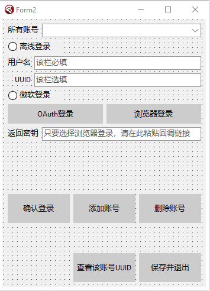
由于目前我们暂时未学OAuth登录，因此这种方式将暂时搁置一下。
我们双击浏览器登录，然后在浏览器登录的按钮点击事件里，写上这么一串字：
procedure TForm2.Button7Click(Sender: TObject);
begin
ShellExecute(Application.Handle, nil, pchar(Concat('https://login.live.com/oauth20_authorize.srf',
'?client_id=00000000402b5328',
'&response_type=code',
'&scope=service%3A%3Auser.auth.xboxlive.com%3A%3AMBI_SSL',
'&redirect_uri=https%3A%2F%2Flogin.live.com%2Foauth20_desktop.srf')), nil, nil, SW_SHOWNORMAL);
end;
是的，没错！我们要做的就是调用一个执行cmd指令的程序：ShellExecute，如果你的编程语言里有直接调用系统默认浏览器打开网址的函数，你当然也可以使用哦！
然后，我们会获得一个回调链接，让玩家将回调链接输入进我们的输入框中，然后点击微软登录的单选框，最后，我们只需要点击一次添加按钮即可开始添加我们的微软账号了！
要添加微软账号，首先在我们的添加账号按钮点击事件里面，写上这样几行代码：
procedure TForm2.Button2Click(Sender: TObject);
begin
if RadioButton1.Checked then begin
... //上期离线登录的代码
end else if RadioButton2.Checked then begin
if messagebox(Handle, '你选择的是微软正版登录，登录过程可能会卡挺久，需要有耐心！有可能会失败，是否要继续呢？。', '有点久提醒', MB_YESNO+MB_ICONINFORMATION) = 7 then exit; //弹出信息框提示玩家是否使用微软登录，如果选否，则退出。
var ed: String := Edit3.Text; //将Edit3的输入框转换成String类型的。Edit3就是回调链接的那个框。
//下面开始判断，如果回调连接里面出现了code=还有&lc=，即证明回调链接输入正确。
if (ed.indexof('code=') <> -1) or (ed.IndexOf('&lc=') <> -1) then begin
//然后此处开始将code后面的字符串切开。
ed := ed.Substring(ed.IndexOf('code=') + 5, ed.Length); //判断回调链接是否合理，共计后面所有的字符都属于需要用到的。
var cpro: TProc := procedure begin //定义一个线程【这里用到了TTask，这个是我们还没学到的，不过我们也即将要学习了！】
try
accm := Account.InitializeAccount(ed, 'post'); //给初始化方法设定一个post值，此处使用了自定义类中的构造函数。
at := accm.GetAccessToken; //获取AccessToken登录秘钥
if at = 'noneaccount' then exit; //如果at没有账号，则为返回方法。
rt := accm.GetRefreshToken; //获取RefreshToken刷新秘钥
un := accm.GetUserName; //获取玩家名字
ud := accm.GetUUID; //获取UUID
except //读取不出则抛出报错。然后执行。这里为网络连接超时所产生的报错。
messagebox(Handle, pchar(Concat('你的网络连接超时了，请连接之后再进行网络请求。或者如果你连接了，重试一次即可。')), '连接超时引发的报错', MB_ICONERROR);
exit; //弹出信息框后退出方法。
end; //将所有目标添加到配置文件。
//这里需要配置5个值。type、name、uuid、accessToken、refreshToken，
//当然，如果你想的话，你可以为accessToken和refreshToken进行加密处理。
(AccountJson.GetValue('account') as TJsonArray).Add(TJsonObject.Create
.AddPair('type', 'microsoft')
.AddPair('name', un)
.AddPair('uuid', ud)
.AddPair('access_token', at)
.AddPair('refresh_token', rt)
);
ComboBox1.ItemIndex := ComboBox1.Items.Add(Concat(un, '（微软）')); //为下拉框新建一个元素，为【用户名+（微软）】图示。
Edit3.Text := ''; //给回调链接输入框重新设为空。
messagebox(Handle, '添加成功！', '添加成功', MB_OK+MB_ICONINFORMATION);
end; //添加成功！
TTask.Run(cpro); //使用TTask执行上述过程。
end else messagebox(Handle, '你的回调链接输入错误了，请重试', '回调链接错误', MB_OK+MB_ICONERROR); //如果回调链接不满足规范，则弹出信息框。
end;
end;
其中，我们需要接触到新类的概念了。什么是新类？新类就是在type中声明一个别的类，不在原本的类里面的，就叫新类【类比于Java语言，新定义一个public static class的一致。】
看了上面的代码，大家可能会对我们添加账号看得比较懂了吧。
但是，我们要新建的类，可不是public static class哦！而是在外部定义一个class。就相当于Java中的以下代码：
public class Hello{
public static void main(String[] args){
Hello2 hello = new Hello2();
hello.cateat();
}
}
class Hello2{
public void cateat(){
System.out.println("The Cat Like Eat Fish!!");
}
}
上述代码会输出一个The Cat Like Eat Fish!!，我们要声明的类，就在Hello2这一部分啦！
我们首先往上翻，找到type TForm2这个类，然后像我这么写：
type
TForm2 = class(TForm) //这里的括号内，表示继承。
//如果继承的是个类，则只能填一个，反之，interface接口可以填入多个哦！
...//Some Control
end;
Account = class //此处定义一个新类。不用多写一个type了。
private
un, at, uu, rt: String;
tun, tat, tuu, tct, tbs: String;
public
constructor InitializeAccount(key, rr: String); overload; //构造函数
//constructor InitializeAccount(sn, un, pwd, ct, id, rr: String); overload;
//constructor InitializeOAuth(key, token, rr: String); overload;
function GetAccessToken: String;
function GetRefreshToken: String;
function GetUserName: String;
function GetUUID: String;
//function GetThirdAccessToken: String;
//function GetThirdClientToken: String;
//function GetThirdUserName: String;
//function GetThirdUUID: String;
//function GetThirdBaseCode: string;
class function GetHttpf(key, web: String): String;
class function GetHttpy(key, web: String): String;
class function GetHttph(key, web: String): String;
end;
我们定义和上面一样多的函数就可以了！
此时，我们可以看到，怎么会这么多函数呢？虽然有些被注释了哈。。
原因很简单，我只是把下一章才教的外置登录和下下一章教到的微软OAuth登录提前将方法定义好了。如果我们去掉下两章的代码，则就是将上方注释的样子。如果去掉注释，则就是下两章说道的内容了！
oh，我发现了一个新的问题，大家应该还没见过constructor这个关键字吧，其实这个关键字是构造函数的意思，也就是类似于java中如下的写法：
public class Hello{
private final int i;
private Hello(int i){
this.i = i;
}
public static void main(String[] args){
Hello hel = new Hello(10);
System.out.println(hel.i);
}
}
这么写，上面的private Hello就相当于Delphi中的constructor了！但只不过我们在Java中的写法是private的，而在Delphi里面的写法是public下面的啦！
而且，我们这里不仅声明了一个相同名称的构造函数，这里给大家普及一个知识点，在Delphi中，我们使用构造函数或者别的方法时，如果使用到同一个函数名，但是参数不一样。直接写会报错，此时，我们应该在该函数的末尾声明为overload即可。，这个的意思是多态。
还有一个是关于继承的，在Java或者Kotlin中，我们都有override关键字，或者是它的注解，用于声明这个方法是继承得来的方法，而Delphi中也有override关键字，我们只需要在继承的方法后面写上override就可以了！
因此，就是这么简单了！
然后，我们还要来说说看静态方法，在Delphi中，是不存在static关键字的，但是我们可以用另一种方式来声明一个静态方法，就是在方法前面加上一个class关键字，这样，我们就可以直接通过【类名.方法名】来获取到这个方法了。
好了，接着说，我们先把下面的GetHTTPf、GetHTTPy、GetHTTPh写好之后，我们再去写构造函数啦。
首先，键入以下代码：
implementation //在implementation下方写。
class function Account.GetHTTPf(key: string; web: string): string;
begin
var ss := TStringStream.Create('', TEncoding.UTF8, False); //首先定义一个流。用于为Post写入请求头。
var http := TNetHTTPClient.Create(nil); //定义一个TNetHTTPClient，用于进行网络Get、Post指令。
try
ss.WriteString(key); //写入流
ss.Position := 0; //让流的位置返回0
with http do begin //with关键字是可以无需使用http.某个函数，直接使用就好。
AcceptCharSet := 'utf-8'; //设置网络请求编码，默认都是utf-8
AcceptEncoding := '65001'; //设置编码代号，此为默认编码
AcceptLanguage := 'en-US'; //设置网络请求语言，此为英文。
ResponseTimeout := 200000; //设置请求时长
ConnectionTimeout := 200000; //设置连接时长
SendTimeout := 200000; //设置发送时长【完美的英文理解】，以下为设置请求协议。
SecureProtocols := [THTTPSecureProtocol.SSL3, THTTPSecureProtocol.TLS12, THTTPSecureProtocol.TLS13]; //请求协议，这里调用了SSL3、TLS12和TLS13。
HandleRedirects := True; //可以网址重定向，也就是说假如Post、Get的网址有重定向，这样也可以获取到。
ContentType := 'application/x-www-form-urlencoded;charset=utf-8'; //设置请求类型，这里是x-www-form-urlencoded。
var res := Post(web, ss); //现在开始Post请求。将写入的头定义的流填入。
result := res.ContentAsString; //返回网址的请求值，将其转换成String类型。
end;
finally
http.Free; //释放资源
ss.Free; //释放资源
end;
end;
class function Account.GetHTTPy(key, web: String): String;
begin
var ss := TStringStream.Create('', TEncoding.UTF8, False);
var http := TNetHTTPClient.Create(nil);
try
ss.WriteString(key); //该方法与上面的一致
ss.Position := 0;
with http do begin
AcceptCharSet := 'utf-8';
AcceptEncoding := '65001';
AcceptLanguage := 'en-US';
ResponseTimeout := 200000;
ConnectionTimeout := 200000;
SendTimeout := 200000;
SecureProtocols := [THTTPSecureProtocol.SSL3, THTTPSecureProtocol.TLS12, THTTPSecureProtocol.TLS13];
HandleRedirects := True;
ContentType := 'application/json;charset=utf-8'; //唯独这里不一样，这里使用了json作为请求头类型。
Accept := 'application/json'; //这里将Accept类型也换成json，只是少了charset=utf-8的。
var res := Post(web, ss); //然后依旧是一致的哦！
result := res.ContentAsString;
end;
finally
http.Free;
ss.Free;
end;
end;
class function Account.GetHTTPh(key, web: String): String;
begin
var ss := TStringStream.Create('', TEncoding.UTF8, False);
var http := TNetHTTPClient.Create(nil);
try
with http do begin //这里的h方法，是Get的方法，与上面有些许不一致。
AcceptCharSet := 'utf-8'; //这里没有将key写入流，因为此时，这个流是用于接收Get请求的返回值的。
AcceptEncoding := '65001';
AcceptLanguage := 'en-US';
ResponseTimeout := 200000;
ConnectionTimeout := 200000;
SendTimeout := 200000;
SecureProtocols := [THTTPSecureProtocol.SSL3, THTTPSecureProtocol.TLS12, THTTPSecureProtocol.TLS13];
HandleRedirects := True; //此处与上面的均一致。
CustomHeaders['Authorization'] := Concat('Bearer ', key); //这里使用自定义头，使用了Authorization作为键，然后Bearer key作为请求的密钥。
Get(web, ss); //这里对web进行get请求，然后将一个已经初始化的空流当作第二个参数填入进去。此处不需要使用一个变量接收Get值。
result := ss.DataString; //返回流的字符串数据。
end;
finally
http.Free;
ss.Free;
end;
end;
好了，注释都写好了！我们需要注意的是，在Delphi中，对于Get、Post的请求均不一致，如Post请求需要提前在第二个参数里写上key值，而Get请求，则是直接在CustomHeaders里面，写上键，和值即可。
然后，我们需要注意的是：在别的语言中，可能并没有Delphi这么详细的设置，如设置AcceptEncoding := '65501'、AcceptCharSet := 'utf-8'等的设置，大多数语言都会有一个默认值。大家当然也可以完全按照所需要的语言教程中的HTTP请求的默认值来写哦！
然后嘛，将这一串代码复制进Delphi中，可能会发生大报错。原因是我们还没有引用任何一个头文件。这个TNetHTTPClient是需要引用好几个头文件才能够正常使用的。
我们需要引用下方几个头【如果你所编写的语言需要import什么类，你就照常引用就好了】
uses
System.Net.URLClient, System.Net.HttpClient, System.Net.HttpClientComponent;
我们需要引用整整三个头文件，是的，TNetHTTPClient就是这样！
当然，如果你想自己找头文件引用的话，你可以进入窗口视图，在右下角的Palette中，搜索TNetHTTPClient，然后将其中的某个控件拖到窗体上，再进入一次代码视图，然后再回到窗体视图，右键TNetHTTPClient删掉这个控件即可。
自然，照我上面一说，大家肯定认为这个TNetHTTPClient是一个控件。那为什么我们不在Delphi里面直接拖入一个TNetHTTPClient控件，而非要在程序中自己Create一个呢？原因很简单，拖入的控件无法free资源，因为一旦free后，其他时候再想调用就会很麻烦，而且无法做到每个函数执行完一次后直接free资源，从而达到内存不会泄漏，同时内存可以及时的释放资源。综上所述，我们需要在程序里自己Create一个TNetHTTPClient控件。
然后嘛，自然就是我们的
function GetAccessToken: String;
function GetRefreshToken: String;
function GetUserName: String;
function GetUUID: String;
这几个函数啦。这几个函数尤为简单，我们为什么会这么写呢？原因不得而知，我们有几个全局变量是private类型的，因此我们需要写上这么几个函数啦！
然后，还有，我不是很清楚Java里面的private函数作用域是在本文件里到处可以使用，还是在本类中到处可以使用。我只知道Delphi里面，private内的变量或函数的作用域是在本单元文件中的到处都可以使用，无关于类。
但是，我们还是要写上这么四个函数【后期做第三方Authlib登录的时候也需要】，因为后面我们的启动游戏过程中，会启动过程中调用一次微软的验证服务器来验证我们的accessToken是否合法。
我们直接开始写吧：
function Account.GetAccessToken: string;
begin
result := at;
end;
function Account.GetRefreshToken: string;
begin
result := rt;
end;
function Account.GetUserName: string;
begin
result := un;
end;
function Account.GetUUID: string;
begin
result := uu;
end;
那么，这里就是我们的函数了！是不是很简单呢？自然，我们也可以对其进行判空，例如判断at、rt、un、uu全局变量是否为空，如果为空，则raise一个Exception，都是可以的！
这几个变量我在之前已经说过了哦！大家可以回去看看我的Account这个类里面的private代码块下面的全局变量哦！
好了好了，接下来才是重头戏，我们需要写微软登录的构造函数InitializeAccount了！这个的中文意思是初始化账号哦！
//初始化微软登录
constructor Account.InitializeAccount(key, rr: String); //构造函数实现
const //设置4个请求网址
micro = 'https://login.live.com/oauth20_token.srf';
xbox = 'https://user.auth.xboxlive.com/user/authenticate';
xsts = 'https://xsts.auth.xboxlive.com/xsts/authorize';
mccc = 'https://api.minecraftservices.com/authentication/login_with_xbox';
ishas = 'https://api.minecraftservices.com/minecraft/profile';
begin
var k1: String;
if rr = 'refresh' then
k1 := Concat('client_id=00000000402b5328',
'&refresh_token=', key,
'&grant_type=refresh_token',
'&redirect_uri=https://login.live.com/oauth20_desktop.srf',
'&scope=service::user.auth.xboxlive.com::MBI_SSL')
else
k1 := Concat('client_id=00000000402b5328',
'&code=', key,
'&grant_type=authorization_code',
'&redirect_uri=https%3A%2F%2Flogin.live.com%2Foauth20_desktop.srf',
'&scope=service%3A%3Auser.auth.xboxlive.com%3A%3AMBI_SSL');
//这里是请求microsoft的。
Form3.Label8.Caption := '正在请求microsoft中……';
var t1 := Account.GetResultForHttpf(k1, micro); //传值进方法并将返回值设置。
var j1 := TJsonObject.ParseJSONValue(t1) as TJsonObject; //设置json解析
var w1 := j1.GetValue('access_token').Value; //获取assets_token，下面继续设置请求参数。
//这里是请求xbox的
var k2 := Concat('{"Properties":{"AuthMethod":"RPS","SiteName":"user.auth.xboxlive.com","RpsTicket":"', w1, '"},"RelyingParty":"http://auth.xboxlive.com","TokenType":"JWT"}'); //设定xbox的请求头。
var t2 := Account.GetResultForHttpy(k2, xbox);
var j2 := TJsonObject.ParseJSONValue(t2) as TJsonObject;
var w2 := j2.GetValue('Token').Value;
//这里将获取到uhs的值。
var r1 := j2.GetValue('DisplayClaims') as TJsonObject;
var ur := r1.GetValue('xui') as TJsonArray;
var uhs := ur[0].GetValue<String>('uhs');
//这里是请求xsts的。
var k3 := Concat('{"Properties":{"SandboxId":"RETAIL","UserTokens":["', w2, '"]},"RelyingParty":"rp://api.minecraftservices.com/","TokenType":"JWT"}');//设定xsts的请求头。
var t3 := Account.GetResultForHttpy(k3, xsts);
var j3 := TJsonObject.ParseJSONValue(t3) as TJsonObject;
var w3 := j3.GetValue('Token').Value;
//这里将判断uhs是否一致【基本上都会一致的，没有存在不一致的情况。。。】
var rr1 := j3.GetValue('DisplayClaims') as TJsonObject; //对uhs进行json解析。
var uur := rr1.GetValue('xui') as TJsonArray;
var uhhs := uur[0].GetValue<String>('uhs');
if uhhs <> uhs then raise Exception.Create('Microsoft uhs is not equal');
//这一步是请求mc的。
var k4 := Concat('{"identityToken":"XBL3.0 x=', uhs, ';', w3, '"}');
var t4 := Account.GetResultForHttpy(k4, mccc);
var j4 := TJsonObject.ParseJSONValue(t4) as TJsonObject;
var w4 := j4.GetValue('access_token').Value; //获取到accesstoken。
//PS：直到这一步，我们才正式的获取到accessToken。很复杂，但也很耐人寻味。
//获取是否为购买了mc的样子。
var t5 := Account.GetResultForHttph(w4, ishas);
var j5 := TJsonObject.ParseJSONValue(t5) as TJsonObject; //将通过accessToken的json值，解析出来，并判断里面是否有以下键值。
try //判断里面是否有name、id值，如果有，则将rt、at一并赋值为refresh_token、access_token。
un := j5.GetValue('name').Value;
uu := j5.GetValue('id').Value;
rt := j1.GetValue('refresh_token').Value;
at := j4.GetValue('access_token').Value;
except //如果里面没有值，则抛出报错。
if messagebox(Form3.Handle, '不好意思，您的Microsoft账户并没有购买Minecraft，请问是否立即前往官网购买？', '暂未购买，是否前往商店', MB_YESNO+MB_ICONERROR) = 6 then //暂未购买。
begin //打开一个网址，请用户购买。
ShellExecute(Application.Handle, nil,
'https://www.minecraft.net/zh-hans/store/minecraft-java-edition',
nil, nil, SW_SHOWNORMAL)
end;
at := 'noneaccount';
end;
end;
好了好了，这就是我们的构造函数了哦！
这么写完了以后，我们再次回到我们的按钮，我们惊讶的发现了，我们的按钮已经设置完毕了！那么，此时此刻，我们就可以回到我们的主窗口，点击我们的启动游戏按钮，然后键入以下代码：
procedure TForm1.Button1Click(Sender: TJsonObject);
begin
... //前面省略
if typetemp = 'offline' then begin //如果type键等于offline，则执行。
PlayerName := chooseAbout.GetValue('name').Value; //设置为name
PlayerUUID := chooseAbout.GetValue('uuid').Value; //设置为uuid
PlayerAcTo := PlayerUUID; //accessToken等于uuid
PlayerType := 'Legacy'; //type为Legacy。
end //将末尾分号去掉。
else if typetemp = 'microsoft' then begin
PlayerName := chooseAbout.GetValue('name').Value; //设置为name
PlayerUUID := chooseAbout.GetValue('uuid').Value; //设置为uuid
PlayerAcTo := chooseAbout.GetValue('access_token').Value; //设置为accessToken
PlayerType := 'Mojang'; //type为Mojang。
end;
... //后面省略
然后，此时此刻我们再尝试一下启动游戏！成功了！微软登录成功了！
微软的OAuth登录
警告：该种登录方式是所有登录方式中最为安全的一种方式，如果你不确定你需要哪种方式来写代码，请务必使用此种方式！
好了好了，又是我们最为关键的一步：微软OAuth登录啦！
想必吼，各位应该有使用过HMCL、BakaXL等一系列较火的启动器吧！那么这些启动器都有一个特点，这个特点就是：【使用的登录微软的方式与上一章所见的完全不同！】
他们是怎么做到的呢？首先蛤，让我先给各位缕一缕思路哈！
他们调用系统默认浏览器打开了一个网址，网址为【https://www.microsoft.com/link 】这个网址，当然了，现在可别打开这个网址哦！然后，启动器会弹出一个代码窗口，要求我们将该代码填入到link网址中显示的输入框内。
紧接着，启动器开始静默，随之而来的就是在浏览器中操作的过程了！
浏览器中，我们首先登录一次微软账号【就是简单的输入账号密码】，然后，开始判断我们是否为本账号的主人【要求输入Windows PIN码，也就是开机密码】，再接着，要求我们同意该启动器对Xbox等若干账号的访问权。
等一切都做好之后，网址上弹出了【大功告成，现在可以安全的返回启动器】时，启动器将会自动执行下一步，然后，就自动登录成功了！
其实，在做这一个步骤的时候，我们首先需要弄懂2点：
- 启动器如何弹出应用代码供我们输入进微软官网的输入框。
- 启动器如何静默执行直到用户已完成网页登录的全部请求。
这是我们要讨论的两个问题。
首先，让我们先来看个网址【因为我总觉得，官方文档总要比我说的有效得多。】，该网址出处为wiki.vg。【点我】，我当然直到这个网址是英文的，因此这里是中文的【点我】
然后，下面的过程我将用截图来说明了！
请看这里：
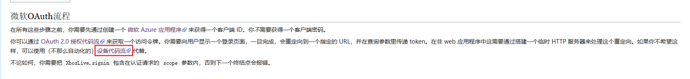
我们进入中文的wiki.vg网址，然后单击我图片框中显示的那个网址，然后，我们再接着往下滑，直到找到一个名为AZure用户注册的地方，大概在这：
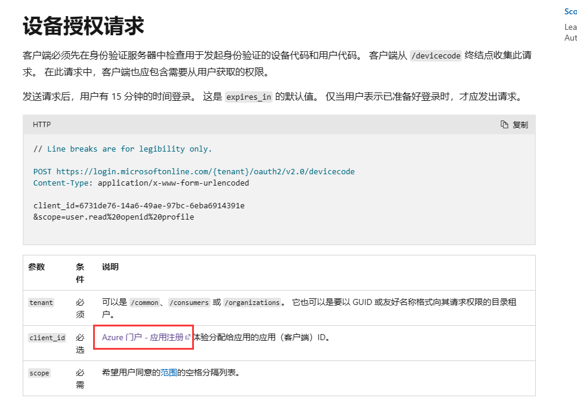
在点击这个网址时，很可能因为这是你第一次点击而让你登录一次微软账号，那么没逝，我们登录即可。随后，我们便可以进入这里，按照我的步骤走吧：
我猜各位现在应该看到的是【应用注册】界面，那这就证明我们来对地方了！
下图，由于我之前已经注册过一个Little Limbo Launcher了，因此我将会点击上方的【新注册】按钮来依次教大家如何注册哦！
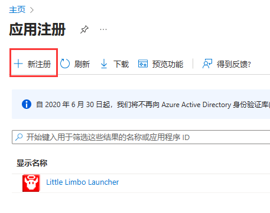
好了，然后，我们就可以使用新注册的账号对我们将要分发的启动器注册一个应用程序了！
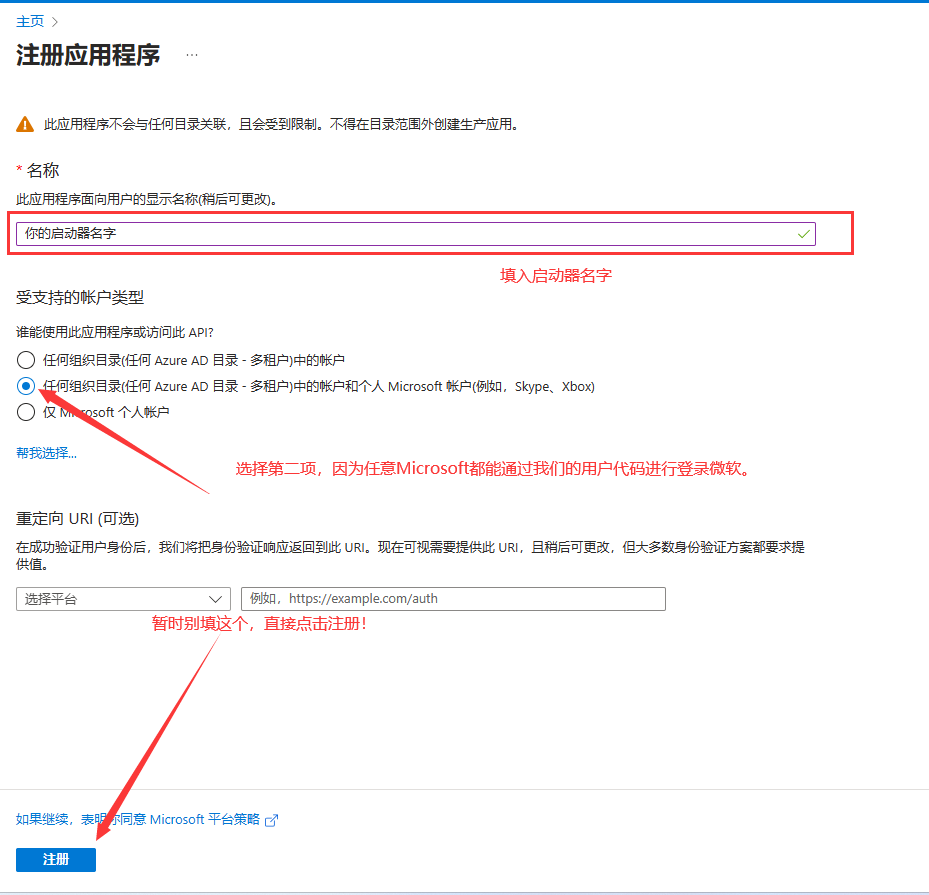
好了，现在立刻进入我们的启动器里面，我的启动器名称暂时命名为【Test Launcher】，不必在意这些细节哦！
当我们注册完毕之后，点进入启动器配置中，随后，我们能够发现一个AZure Client ID，这个ID各位千万不允许泄漏给他人，同样的，假如我们制作的是开源启动器，我们也要将此类用privacy的单独的类进行ignore哦！
在左侧栏点击【身份验证】，然后点击最上面的【添加平台】，在右边选择Web，然后在重定向URI中填入https://www.microsoft.com/link，随后点击下面的访问令牌打勾。前通道注销URI暂时不用填写。
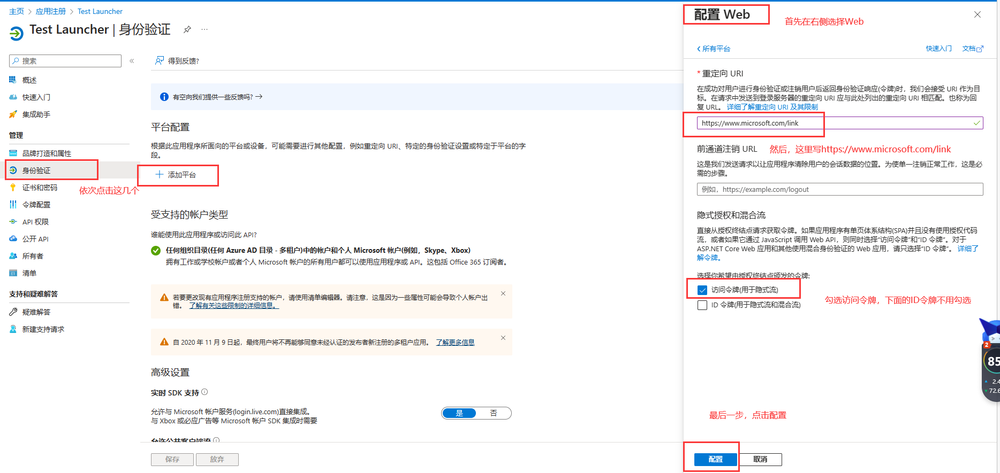
此时此刻，我们如果按照正常流程来走的话，我们就应该可以自动重定向到这个网址了，但是，此时此刻，我们还没有为该应用程序设定是否允许公共的桌面应用对此进行流控制权限，我们需要设置一个。
随后，我们需要往下滑，找到下面这一列：
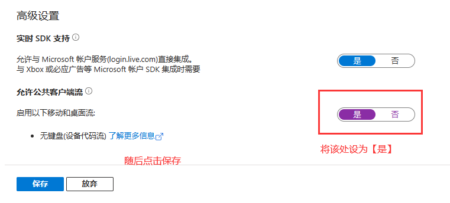
这个就是了！好的，那么接下来，我们就要点击左侧的【品牌打造与属性】进行自定义我们的应用程序啦！
首先点进属性一栏，我们能看到以下几栏。
- 首先：我们需要输入我们的启动器名称，就是在最顶上的那个啦！【必填，多半是在你生成启动器时就早已生成好了名称。】
- logo徽标：需要上传一个logo图标，这里我没用，但大家可以使用而且是必须使用一个你自己启动器的图标上去。【必填】
- 主页URL：写你启动器的主页即可，如果是gitcode，就写gitcode啦，如果是github pages：就写github pages。【可选填，以下可选填均指如果没有则不用填】
- 服务条款：这个不用我多说了，每个应用程序都有的，这里填入你的网址。【可选填】
- 隐私声明：也不用多说了，填入许可证即可。【可选填】
- 服务管理参考：这个也不用多说了，左侧名称处有一个灰色的感叹号，可以自行查看。【可选填】
- 内部备注：写上你对该应用程序的备注即可，可以写【这是LLL启动器的AZure注册！】也可以写别的。【必填】
- 发布者域：配置你所写的域名。【该处不用填，因为市面上大多数启动器都无此功能。】
请看吧：
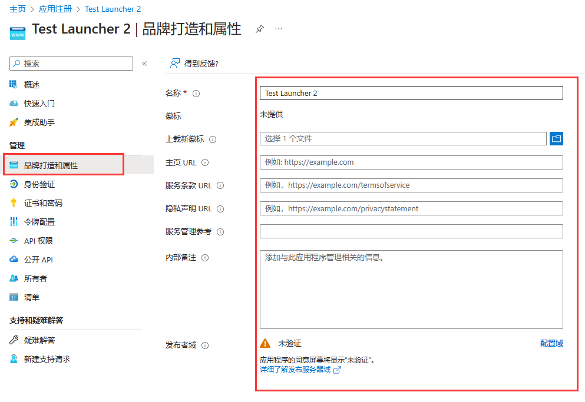
按照上面的配置即可！
此时此刻，我们的AZure账号就算是正式注册完毕了！那么，我们就需要开始完成我们上述的第一步了！【启动器如何弹出应用代码供我们输入进微软官网的输入框】了！